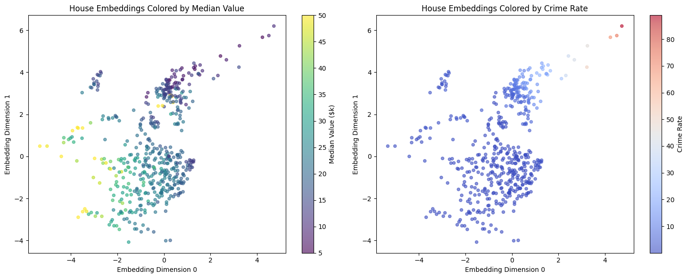
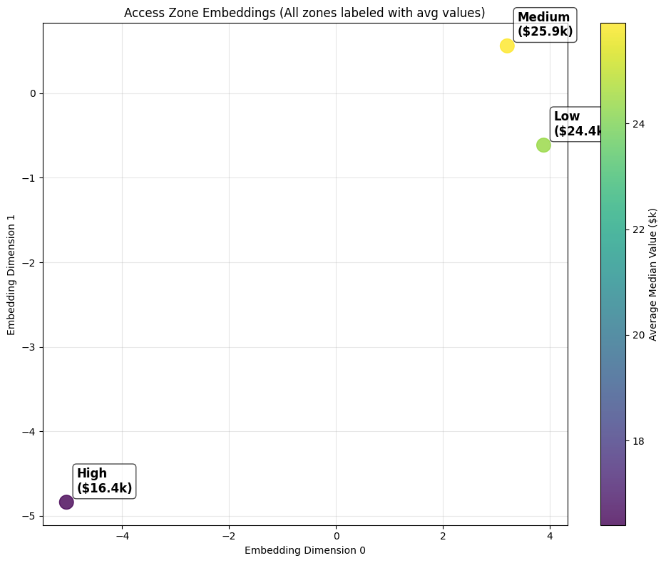

<!DOCTYPE html>


<html lang="en" data-content_root="./" >

  <head>
    <meta charset="utf-8" />
    <meta name="viewport" content="width=device-width, initial-scale=1.0" /><meta name="viewport" content="width=device-width, initial-scale=1" />

    <title>Boston Housing Dataset Example &#8212; Row2Vec Documentation</title>
  
  
  
  <script data-cfasync="false">
    document.documentElement.dataset.mode = localStorage.getItem("mode") || "";
    document.documentElement.dataset.theme = localStorage.getItem("theme") || "";
  </script>
  
  <!-- Loaded before other Sphinx assets -->
  <link href="_static/styles/theme.css?digest=dfe6caa3a7d634c4db9b" rel="stylesheet" />
<link href="_static/styles/bootstrap.css?digest=dfe6caa3a7d634c4db9b" rel="stylesheet" />
<link href="_static/styles/pydata-sphinx-theme.css?digest=dfe6caa3a7d634c4db9b" rel="stylesheet" />

  
  <link href="_static/vendor/fontawesome/6.5.2/css/all.min.css?digest=dfe6caa3a7d634c4db9b" rel="stylesheet" />
  <link rel="preload" as="font" type="font/woff2" crossorigin href="_static/vendor/fontawesome/6.5.2/webfonts/fa-solid-900.woff2" />
<link rel="preload" as="font" type="font/woff2" crossorigin href="_static/vendor/fontawesome/6.5.2/webfonts/fa-brands-400.woff2" />
<link rel="preload" as="font" type="font/woff2" crossorigin href="_static/vendor/fontawesome/6.5.2/webfonts/fa-regular-400.woff2" />

    <link rel="stylesheet" type="text/css" href="_static/pygments.css?v=03e43079" />
    <link rel="stylesheet" type="text/css" href="_static/styles/sphinx-book-theme.css?v=eba8b062" />
    <link rel="stylesheet" type="text/css" href="_static/togglebutton.css?v=13237357" />
    <link rel="stylesheet" type="text/css" href="_static/copybutton.css?v=76b2166b" />
    <link rel="stylesheet" type="text/css" href="_static/mystnb.8ecb98da25f57f5357bf6f572d296f466b2cfe2517ffebfabe82451661e28f02.css" />
    <link rel="stylesheet" type="text/css" href="_static/sphinx-thebe.css?v=4fa983c6" />
    <link rel="stylesheet" type="text/css" href="_static/sphinx-design.min.css?v=95c83b7e" />
  
  <!-- Pre-loaded scripts that we'll load fully later -->
  <link rel="preload" as="script" href="_static/scripts/bootstrap.js?digest=dfe6caa3a7d634c4db9b" />
<link rel="preload" as="script" href="_static/scripts/pydata-sphinx-theme.js?digest=dfe6caa3a7d634c4db9b" />
  <script src="_static/vendor/fontawesome/6.5.2/js/all.min.js?digest=dfe6caa3a7d634c4db9b"></script>

    <script src="_static/documentation_options.js?v=9eb32ce0"></script>
    <script src="_static/doctools.js?v=9a2dae69"></script>
    <script src="_static/sphinx_highlight.js?v=dc90522c"></script>
    <script src="_static/clipboard.min.js?v=a7894cd8"></script>
    <script src="_static/copybutton.js?v=f281be69"></script>
    <script src="_static/scripts/sphinx-book-theme.js?v=887ef09a"></script>
    <script>let toggleHintShow = 'Click to show';</script>
    <script>let toggleHintHide = 'Click to hide';</script>
    <script>let toggleOpenOnPrint = 'true';</script>
    <script src="_static/togglebutton.js?v=4a39c7ea"></script>
    <script>var togglebuttonSelector = '.toggle, .admonition.dropdown';</script>
    <script src="_static/design-tabs.js?v=f930bc37"></script>
    <script>const THEBE_JS_URL = "https://unpkg.com/thebe@0.8.2/lib/index.js"; const thebe_selector = ".thebe,.cell"; const thebe_selector_input = "pre"; const thebe_selector_output = ".output, .cell_output"</script>
    <script async="async" src="_static/sphinx-thebe.js?v=c100c467"></script>
    <script>var togglebuttonSelector = '.toggle, .admonition.dropdown';</script>
    <script>const THEBE_JS_URL = "https://unpkg.com/thebe@0.8.2/lib/index.js"; const thebe_selector = ".thebe,.cell"; const thebe_selector_input = "pre"; const thebe_selector_output = ".output, .cell_output"</script>
    <script>DOCUMENTATION_OPTIONS.pagename = 'housing_example';</script>
    <link rel="canonical" href="/row2vec/housing_example.html" />
    <link rel="index" title="Index" href="genindex.html" />
    <link rel="search" title="Search" href="search.html" />
    <link rel="next" title="Advanced Features" href="advanced_features.html" />
    <link rel="prev" title="Adult Dataset Example" href="adult_example.html" />
  <meta name="viewport" content="width=device-width, initial-scale=1"/>
  <meta name="docsearch:language" content="en"/>
  </head>
  
  
  <body data-bs-spy="scroll" data-bs-target=".bd-toc-nav" data-offset="180" data-bs-root-margin="0px 0px -60%" data-default-mode="">

  
  
  <div id="pst-skip-link" class="skip-link d-print-none"><a href="#main-content">Skip to main content</a></div>
  
  <div id="pst-scroll-pixel-helper"></div>
  
  <button type="button" class="btn rounded-pill" id="pst-back-to-top">
    <i class="fa-solid fa-arrow-up"></i>Back to top</button>

  
  <input type="checkbox"
          class="sidebar-toggle"
          id="pst-primary-sidebar-checkbox"/>
  <label class="overlay overlay-primary" for="pst-primary-sidebar-checkbox"></label>
  
  <input type="checkbox"
          class="sidebar-toggle"
          id="pst-secondary-sidebar-checkbox"/>
  <label class="overlay overlay-secondary" for="pst-secondary-sidebar-checkbox"></label>
  
  <div class="search-button__wrapper">
    <div class="search-button__overlay"></div>
    <div class="search-button__search-container">
<form class="bd-search d-flex align-items-center"
      action="search.html"
      method="get">
  <i class="fa-solid fa-magnifying-glass"></i>
  <input type="search"
         class="form-control"
         name="q"
         id="search-input"
         placeholder="Search..."
         aria-label="Search..."
         autocomplete="off"
         autocorrect="off"
         autocapitalize="off"
         spellcheck="false"/>
  <span class="search-button__kbd-shortcut"><kbd class="kbd-shortcut__modifier">Ctrl</kbd>+<kbd>K</kbd></span>
</form></div>
  </div>

  <div class="pst-async-banner-revealer d-none">
  <aside id="bd-header-version-warning" class="d-none d-print-none" aria-label="Version warning"></aside>
</div>

  
    <header class="bd-header navbar navbar-expand-lg bd-navbar d-print-none">
    </header>
  

  <div class="bd-container">
    <div class="bd-container__inner bd-page-width">
      
      
      
      <div class="bd-sidebar-primary bd-sidebar">
        

  
  <div class="sidebar-header-items sidebar-primary__section">
    
    
    
    
  </div>
  
    <div class="sidebar-primary-items__start sidebar-primary__section">
        <div class="sidebar-primary-item">

  
    
  

<a class="navbar-brand logo" href="intro.html">
  
  
  
  
  
  
    <p class="title logo__title">Row2Vec Documentation</p>
  
</a></div>
        <div class="sidebar-primary-item">

 <script>
 document.write(`
   <button class="btn search-button-field search-button__button" title="Search" aria-label="Search" data-bs-placement="bottom" data-bs-toggle="tooltip">
    <i class="fa-solid fa-magnifying-glass"></i>
    <span class="search-button__default-text">Search</span>
    <span class="search-button__kbd-shortcut"><kbd class="kbd-shortcut__modifier">Ctrl</kbd>+<kbd class="kbd-shortcut__modifier">K</kbd></span>
   </button>
 `);
 </script></div>
        <div class="sidebar-primary-item"><nav class="bd-links bd-docs-nav" aria-label="Main">
    <div class="bd-toc-item navbar-nav active">
        <ul class="current nav bd-sidenav">
<li class="toctree-l1"><a class="reference internal" href="installation.html">Installation</a></li>
<li class="toctree-l1"><a class="reference internal" href="quickstart.html">Quickstart Guide</a></li>
<li class="toctree-l1"><a class="reference internal" href="titanic_example.html">Titanic Dataset Example</a></li>
<li class="toctree-l1"><a class="reference internal" href="adult_example.html">Adult Dataset Example</a></li>
<li class="toctree-l1 current active"><a class="current reference internal" href="#">Boston Housing Dataset Example</a></li>
<li class="toctree-l1"><a class="reference internal" href="advanced_features.html">Advanced Features</a></li>
<li class="toctree-l1"><a class="reference internal" href="cli_guide.html">Command-Line Interface Guide</a></li>
<li class="toctree-l1"><a class="reference internal" href="theoretical_foundation.html">Theoretical Foundation</a></li>
<li class="toctree-l1"><a class="reference internal" href="api_reference.html">API Reference</a></li>
<li class="toctree-l1"><a class="reference internal" href="changelog.html">Changelog</a></li>
</ul>

    </div>
</nav></div>
    </div>
  
  
  <div class="sidebar-primary-items__end sidebar-primary__section">
  </div>
  
  <div id="rtd-footer-container"></div>


      </div>
      
      <main id="main-content" class="bd-main" role="main">
        
        

<div class="sbt-scroll-pixel-helper"></div>

          <div class="bd-content">
            <div class="bd-article-container">
              
              <div class="bd-header-article d-print-none">
<div class="header-article-items header-article__inner">
  
    <div class="header-article-items__start">
      
        <div class="header-article-item"><button class="sidebar-toggle primary-toggle btn btn-sm" title="Toggle primary sidebar" data-bs-placement="bottom" data-bs-toggle="tooltip">
  <span class="fa-solid fa-bars"></span>
</button></div>
      
    </div>
  
  
    <div class="header-article-items__end">
      
        <div class="header-article-item">

<div class="article-header-buttons">


<div class="dropdown dropdown-download-buttons">
  <button class="btn dropdown-toggle" type="button" data-bs-toggle="dropdown" aria-expanded="false" aria-label="Download this page">
    <i class="fas fa-download"></i>
  </button>
  <ul class="dropdown-menu">
      
      
      
      <li><a href="_sources/housing_example.md" target="_blank"
   class="btn btn-sm btn-download-source-button dropdown-item"
   title="Download source file"
   data-bs-placement="left" data-bs-toggle="tooltip"
>
  

<span class="btn__icon-container">
  <i class="fas fa-file"></i>
  </span>
<span class="btn__text-container">.md</span>
</a>
</li>
      
      
      
      
      <li>
<button onclick="window.print()"
  class="btn btn-sm btn-download-pdf-button dropdown-item"
  title="Print to PDF"
  data-bs-placement="left" data-bs-toggle="tooltip"
>
  

<span class="btn__icon-container">
  <i class="fas fa-file-pdf"></i>
  </span>
<span class="btn__text-container">.pdf</span>
</button>
</li>
      
  </ul>
</div>


<button onclick="toggleFullScreen()"
  class="btn btn-sm btn-fullscreen-button"
  title="Fullscreen mode"
  data-bs-placement="bottom" data-bs-toggle="tooltip"
>
  

<span class="btn__icon-container">
  <i class="fas fa-expand"></i>
  </span>

</button>


<script>
document.write(`
  <button class="btn btn-sm nav-link pst-navbar-icon theme-switch-button" title="light/dark" aria-label="light/dark" data-bs-placement="bottom" data-bs-toggle="tooltip">
    <i class="theme-switch fa-solid fa-sun fa-lg" data-mode="light"></i>
    <i class="theme-switch fa-solid fa-moon fa-lg" data-mode="dark"></i>
    <i class="theme-switch fa-solid fa-circle-half-stroke fa-lg" data-mode="auto"></i>
  </button>
`);
</script>


<script>
document.write(`
  <button class="btn btn-sm pst-navbar-icon search-button search-button__button" title="Search" aria-label="Search" data-bs-placement="bottom" data-bs-toggle="tooltip">
    <i class="fa-solid fa-magnifying-glass fa-lg"></i>
  </button>
`);
</script>
<button class="sidebar-toggle secondary-toggle btn btn-sm" title="Toggle secondary sidebar" data-bs-placement="bottom" data-bs-toggle="tooltip">
    <span class="fa-solid fa-list"></span>
</button>
</div></div>
      
    </div>
  
</div>
</div>
              
              

<div id="jb-print-docs-body" class="onlyprint">
    <h1>Boston Housing Dataset Example</h1>
    <!-- Table of contents -->
    <div id="print-main-content">
        <div id="jb-print-toc">
            
            <div>
                <h2> Contents </h2>
            </div>
            <nav aria-label="Page">
                <ul class="visible nav section-nav flex-column">
<li class="toc-h2 nav-item toc-entry"><a class="reference internal nav-link" href="#load-and-explore-data">Load and Explore Data</a></li>
<li class="toc-h2 nav-item toc-entry"><a class="reference internal nav-link" href="#data-overview">Data Overview</a></li>
<li class="toc-h2 nav-item toc-entry"><a class="reference internal nav-link" href="#prepare-features-for-embedding">Prepare Features for Embedding</a></li>
<li class="toc-h2 nav-item toc-entry"><a class="reference internal nav-link" href="#unsupervised-house-embeddings">Unsupervised House Embeddings</a></li>
<li class="toc-h2 nav-item toc-entry"><a class="reference internal nav-link" href="#visualize-house-embeddings">Visualize House Embeddings</a></li>
<li class="toc-h2 nav-item toc-entry"><a class="reference internal nav-link" href="#categorical-zone-embeddings">Categorical Zone Embeddings</a></li>
<li class="toc-h2 nav-item toc-entry"><a class="reference internal nav-link" href="#analyze-zone-relationships">Analyze Zone Relationships</a></li>
<li class="toc-h2 nav-item toc-entry"><a class="reference internal nav-link" href="#age-category-embeddings">Age Category Embeddings</a></li>
<li class="toc-h2 nav-item toc-entry"><a class="reference internal nav-link" href="#use-embeddings-for-price-prediction">Use Embeddings for Price Prediction</a></li>
<li class="toc-h2 nav-item toc-entry"><a class="reference internal nav-link" href="#compare-prediction-performance">Compare Prediction Performance</a></li>
<li class="toc-h2 nav-item toc-entry"><a class="reference internal nav-link" href="#classical-methods-comparison">Classical Methods Comparison</a></li>
<li class="toc-h2 nav-item toc-entry"><a class="reference internal nav-link" href="#production-pipeline">Production Pipeline</a></li>
<li class="toc-h2 nav-item toc-entry"><a class="reference internal nav-link" href="#key-insights">Key Insights</a></li>
<li class="toc-h2 nav-item toc-entry"><a class="reference internal nav-link" href="#next-steps">Next Steps</a></li>
</ul>
            </nav>
        </div>
    </div>
</div>

              
                
<div id="searchbox"></div>
                <article class="bd-article">
                  
  <section class="tex2jax_ignore mathjax_ignore" id="boston-housing-dataset-example">
<h1>Boston Housing Dataset Example<a class="headerlink" href="#boston-housing-dataset-example" title="Link to this heading">#</a></h1>
<p>The Boston Housing dataset demonstrates Row2Vec with continuous features and regression targets.</p>
<section id="load-and-explore-data">
<h2>Load and Explore Data<a class="headerlink" href="#load-and-explore-data" title="Link to this heading">#</a></h2>
<div class="cell tag_remove-stderr tag_remove-warnings docutils container">
<div class="cell_input docutils container">
<div class="highlight-ipython3 notranslate"><div class="highlight"><pre><span></span><span class="c1"># Import complete suppression first</span>
<span class="n">exec</span><span class="p">(</span><span class="nb">open</span><span class="p">(</span><span class="s1">&#39;suppress_minimal.py&#39;</span><span class="p">)</span><span class="o">.</span><span class="n">read</span><span class="p">())</span>

<span class="kn">import</span><span class="w"> </span><span class="nn">pandas</span><span class="w"> </span><span class="k">as</span><span class="w"> </span><span class="nn">pd</span>
<span class="kn">import</span><span class="w"> </span><span class="nn">numpy</span><span class="w"> </span><span class="k">as</span><span class="w"> </span><span class="nn">np</span>
<span class="kn">from</span><span class="w"> </span><span class="nn">row2vec</span><span class="w"> </span><span class="kn">import</span> <span class="n">learn_embedding</span>
<span class="kn">import</span><span class="w"> </span><span class="nn">os</span>

<span class="c1"># Load Boston Housing dataset (originally mislabeled as Ames)</span>
<span class="n">data_path</span> <span class="o">=</span> <span class="n">os</span><span class="o">.</span><span class="n">path</span><span class="o">.</span><span class="n">join</span><span class="p">(</span><span class="s1">&#39;..&#39;</span><span class="p">,</span> <span class="s1">&#39;data&#39;</span><span class="p">,</span> <span class="s1">&#39;ames_housing.csv&#39;</span><span class="p">)</span>

<span class="c1"># Boston housing dataset column names</span>
<span class="n">column_names</span> <span class="o">=</span> <span class="p">[</span>
    <span class="s1">&#39;CRIM&#39;</span><span class="p">,</span> <span class="s1">&#39;ZN&#39;</span><span class="p">,</span> <span class="s1">&#39;INDUS&#39;</span><span class="p">,</span> <span class="s1">&#39;CHAS&#39;</span><span class="p">,</span> <span class="s1">&#39;NOX&#39;</span><span class="p">,</span> <span class="s1">&#39;RM&#39;</span><span class="p">,</span> <span class="s1">&#39;AGE&#39;</span><span class="p">,</span> <span class="s1">&#39;DIS&#39;</span><span class="p">,</span>
    <span class="s1">&#39;RAD&#39;</span><span class="p">,</span> <span class="s1">&#39;TAX&#39;</span><span class="p">,</span> <span class="s1">&#39;PTRATIO&#39;</span><span class="p">,</span> <span class="s1">&#39;B&#39;</span><span class="p">,</span> <span class="s1">&#39;LSTAT&#39;</span><span class="p">,</span> <span class="s1">&#39;MEDV&#39;</span>
<span class="p">]</span>

<span class="n">df</span> <span class="o">=</span> <span class="n">pd</span><span class="o">.</span><span class="n">read_csv</span><span class="p">(</span><span class="n">data_path</span><span class="p">,</span> <span class="n">header</span><span class="o">=</span><span class="kc">None</span><span class="p">,</span> <span class="n">names</span><span class="o">=</span><span class="n">column_names</span><span class="p">)</span>

<span class="nb">print</span><span class="p">(</span><span class="sa">f</span><span class="s2">&quot;Dataset shape: </span><span class="si">{</span><span class="n">df</span><span class="o">.</span><span class="n">shape</span><span class="si">}</span><span class="s2">&quot;</span><span class="p">)</span>
<span class="nb">print</span><span class="p">(</span><span class="sa">f</span><span class="s2">&quot;</span><span class="se">\n</span><span class="s2">Column names: </span><span class="si">{</span><span class="n">df</span><span class="o">.</span><span class="n">columns</span><span class="o">.</span><span class="n">tolist</span><span class="p">()</span><span class="si">}</span><span class="s2">&quot;</span><span class="p">)</span>
<span class="nb">print</span><span class="p">(</span><span class="sa">f</span><span class="s2">&quot;Total columns: </span><span class="si">{</span><span class="nb">len</span><span class="p">(</span><span class="n">df</span><span class="o">.</span><span class="n">columns</span><span class="p">)</span><span class="si">}</span><span class="s2">&quot;</span><span class="p">)</span>
</pre></div>
</div>
</div>
<div class="cell_output docutils container">
<div class="output stream highlight-myst-ansi notranslate"><div class="highlight"><pre><span></span>✓ Enhanced minimal suppression active
</pre></div>
</div>
<div class="output stream highlight-myst-ansi notranslate"><div class="highlight"><pre><span></span>Dataset shape: (506, 14)

Column names: [&#39;CRIM&#39;, &#39;ZN&#39;, &#39;INDUS&#39;, &#39;CHAS&#39;, &#39;NOX&#39;, &#39;RM&#39;, &#39;AGE&#39;, &#39;DIS&#39;, &#39;RAD&#39;, &#39;TAX&#39;, &#39;PTRATIO&#39;, &#39;B&#39;, &#39;LSTAT&#39;, &#39;MEDV&#39;]
Total columns: 14
</pre></div>
</div>
</div>
</div>
</section>
<section id="data-overview">
<h2>Data Overview<a class="headerlink" href="#data-overview" title="Link to this heading">#</a></h2>
<div class="cell tag_remove-stderr tag_remove-warnings docutils container">
<div class="cell_input docutils container">
<div class="highlight-ipython3 notranslate"><div class="highlight"><pre><span></span><span class="c1"># Focus on a manageable subset of important features</span>
<span class="n">important_cols</span> <span class="o">=</span> <span class="p">[</span>
    <span class="s1">&#39;CRIM&#39;</span><span class="p">,</span> <span class="s1">&#39;ZN&#39;</span><span class="p">,</span> <span class="s1">&#39;INDUS&#39;</span><span class="p">,</span> <span class="s1">&#39;NOX&#39;</span><span class="p">,</span> <span class="s1">&#39;RM&#39;</span><span class="p">,</span> <span class="s1">&#39;AGE&#39;</span><span class="p">,</span> <span class="s1">&#39;DIS&#39;</span><span class="p">,</span>
    <span class="s1">&#39;RAD&#39;</span><span class="p">,</span> <span class="s1">&#39;TAX&#39;</span><span class="p">,</span> <span class="s1">&#39;PTRATIO&#39;</span><span class="p">,</span> <span class="s1">&#39;LSTAT&#39;</span><span class="p">,</span> <span class="s1">&#39;MEDV&#39;</span>
<span class="p">]</span>

<span class="n">df_subset</span> <span class="o">=</span> <span class="n">df</span><span class="p">[</span><span class="n">important_cols</span><span class="p">]</span><span class="o">.</span><span class="n">copy</span><span class="p">()</span>
<span class="nb">print</span><span class="p">(</span><span class="sa">f</span><span class="s2">&quot;Working with </span><span class="si">{</span><span class="nb">len</span><span class="p">(</span><span class="n">important_cols</span><span class="p">)</span><span class="si">}</span><span class="s2"> key features:&quot;</span><span class="p">)</span>
<span class="nb">print</span><span class="p">(</span><span class="n">df_subset</span><span class="o">.</span><span class="n">columns</span><span class="o">.</span><span class="n">tolist</span><span class="p">())</span>

<span class="nb">print</span><span class="p">(</span><span class="sa">f</span><span class="s2">&quot;</span><span class="se">\n</span><span class="s2">Dataset shape: </span><span class="si">{</span><span class="n">df_subset</span><span class="o">.</span><span class="n">shape</span><span class="si">}</span><span class="s2">&quot;</span><span class="p">)</span>
<span class="nb">print</span><span class="p">(</span><span class="sa">f</span><span class="s2">&quot;</span><span class="se">\n</span><span class="s2">Missing values:&quot;</span><span class="p">)</span>
<span class="n">missing</span> <span class="o">=</span> <span class="n">df_subset</span><span class="o">.</span><span class="n">isnull</span><span class="p">()</span><span class="o">.</span><span class="n">sum</span><span class="p">()</span>
<span class="nb">print</span><span class="p">(</span><span class="n">missing</span><span class="p">[</span><span class="n">missing</span> <span class="o">&gt;</span> <span class="mi">0</span><span class="p">]</span> <span class="k">if</span> <span class="n">missing</span><span class="o">.</span><span class="n">any</span><span class="p">()</span> <span class="k">else</span> <span class="s2">&quot;No missing values&quot;</span><span class="p">)</span>
</pre></div>
</div>
</div>
<div class="cell_output docutils container">
<div class="output stream highlight-myst-ansi notranslate"><div class="highlight"><pre><span></span>Working with 12 key features:
[&#39;CRIM&#39;, &#39;ZN&#39;, &#39;INDUS&#39;, &#39;NOX&#39;, &#39;RM&#39;, &#39;AGE&#39;, &#39;DIS&#39;, &#39;RAD&#39;, &#39;TAX&#39;, &#39;PTRATIO&#39;, &#39;LSTAT&#39;, &#39;MEDV&#39;]

Dataset shape: (506, 12)

Missing values:
No missing values
</pre></div>
</div>
</div>
</div>
<div class="cell tag_remove-stderr tag_remove-warnings docutils container">
<div class="cell_input docutils container">
<div class="highlight-ipython3 notranslate"><div class="highlight"><pre><span></span><span class="c1"># Basic statistics</span>
<span class="nb">print</span><span class="p">(</span><span class="s2">&quot;Target variable (MEDV - Median home value) statistics:&quot;</span><span class="p">)</span>
<span class="nb">print</span><span class="p">(</span><span class="sa">f</span><span class="s2">&quot;Mean: $</span><span class="si">{</span><span class="n">df_subset</span><span class="p">[</span><span class="s1">&#39;MEDV&#39;</span><span class="p">]</span><span class="o">.</span><span class="n">mean</span><span class="p">()</span><span class="si">:</span><span class="s2">,.0f</span><span class="si">}</span><span class="s2">k&quot;</span><span class="p">)</span>
<span class="nb">print</span><span class="p">(</span><span class="sa">f</span><span class="s2">&quot;Median: $</span><span class="si">{</span><span class="n">df_subset</span><span class="p">[</span><span class="s1">&#39;MEDV&#39;</span><span class="p">]</span><span class="o">.</span><span class="n">median</span><span class="p">()</span><span class="si">:</span><span class="s2">,.0f</span><span class="si">}</span><span class="s2">k&quot;</span><span class="p">)</span>
<span class="nb">print</span><span class="p">(</span><span class="sa">f</span><span class="s2">&quot;Min: $</span><span class="si">{</span><span class="n">df_subset</span><span class="p">[</span><span class="s1">&#39;MEDV&#39;</span><span class="p">]</span><span class="o">.</span><span class="n">min</span><span class="p">()</span><span class="si">:</span><span class="s2">,.0f</span><span class="si">}</span><span class="s2">k&quot;</span><span class="p">)</span>
<span class="nb">print</span><span class="p">(</span><span class="sa">f</span><span class="s2">&quot;Max: $</span><span class="si">{</span><span class="n">df_subset</span><span class="p">[</span><span class="s1">&#39;MEDV&#39;</span><span class="p">]</span><span class="o">.</span><span class="n">max</span><span class="p">()</span><span class="si">:</span><span class="s2">,.0f</span><span class="si">}</span><span class="s2">k&quot;</span><span class="p">)</span>

<span class="nb">print</span><span class="p">(</span><span class="s2">&quot;</span><span class="se">\n</span><span class="s2">Sample of the data:&quot;</span><span class="p">)</span>
<span class="nb">print</span><span class="p">(</span><span class="n">df_subset</span><span class="o">.</span><span class="n">head</span><span class="p">())</span>
</pre></div>
</div>
</div>
<div class="cell_output docutils container">
<div class="output stream highlight-myst-ansi notranslate"><div class="highlight"><pre><span></span>Target variable (MEDV - Median home value) statistics:
Mean: $23k
Median: $21k
Min: $5k
Max: $50k

Sample of the data:
      CRIM    ZN  INDUS    NOX     RM   AGE     DIS  RAD    TAX  PTRATIO  \
0  0.00632  18.0   2.31  0.538  6.575  65.2  4.0900    1  296.0     15.3   
1  0.02731   0.0   7.07  0.469  6.421  78.9  4.9671    2  242.0     17.8   
2  0.02729   0.0   7.07  0.469  7.185  61.1  4.9671    2  242.0     17.8   
3  0.03237   0.0   2.18  0.458  6.998  45.8  6.0622    3  222.0     18.7   
4  0.06905   0.0   2.18  0.458  7.147  54.2  6.0622    3  222.0     18.7   

   LSTAT  MEDV  
0   4.98  24.0  
1   9.14  21.6  
2   4.03  34.7  
3   2.94  33.4  
4   5.33  36.2  
</pre></div>
</div>
</div>
</div>
</section>
<section id="prepare-features-for-embedding">
<h2>Prepare Features for Embedding<a class="headerlink" href="#prepare-features-for-embedding" title="Link to this heading">#</a></h2>
<div class="cell tag_remove-stderr tag_remove-warnings docutils container">
<div class="cell_input docutils container">
<div class="highlight-ipython3 notranslate"><div class="highlight"><pre><span></span><span class="c1"># Separate features from target</span>
<span class="n">df_features</span> <span class="o">=</span> <span class="n">df_subset</span><span class="o">.</span><span class="n">drop</span><span class="p">(</span><span class="n">columns</span><span class="o">=</span><span class="p">[</span><span class="s1">&#39;MEDV&#39;</span><span class="p">])</span>
<span class="nb">print</span><span class="p">(</span><span class="sa">f</span><span class="s2">&quot;Features for embedding: </span><span class="si">{</span><span class="n">df_features</span><span class="o">.</span><span class="n">columns</span><span class="o">.</span><span class="n">tolist</span><span class="p">()</span><span class="si">}</span><span class="s2">&quot;</span><span class="p">)</span>

<span class="c1"># Check data types</span>
<span class="nb">print</span><span class="p">(</span><span class="sa">f</span><span class="s2">&quot;</span><span class="se">\n</span><span class="s2">Data types:&quot;</span><span class="p">)</span>
<span class="nb">print</span><span class="p">(</span><span class="n">df_features</span><span class="o">.</span><span class="n">dtypes</span><span class="p">)</span>

<span class="c1"># Check for any categorical columns (should be none for Boston housing)</span>
<span class="n">cat_cols</span> <span class="o">=</span> <span class="n">df_features</span><span class="o">.</span><span class="n">select_dtypes</span><span class="p">(</span><span class="n">include</span><span class="o">=</span><span class="p">[</span><span class="s1">&#39;object&#39;</span><span class="p">])</span><span class="o">.</span><span class="n">columns</span>
<span class="k">if</span> <span class="nb">len</span><span class="p">(</span><span class="n">cat_cols</span><span class="p">)</span> <span class="o">&gt;</span> <span class="mi">0</span><span class="p">:</span>
    <span class="nb">print</span><span class="p">(</span><span class="sa">f</span><span class="s2">&quot;</span><span class="se">\n</span><span class="s2">Categorical column cardinalities:&quot;</span><span class="p">)</span>
    <span class="k">for</span> <span class="n">col</span> <span class="ow">in</span> <span class="n">cat_cols</span><span class="p">:</span>
        <span class="nb">print</span><span class="p">(</span><span class="sa">f</span><span class="s2">&quot;  </span><span class="si">{</span><span class="n">col</span><span class="si">}</span><span class="s2">: </span><span class="si">{</span><span class="n">df_features</span><span class="p">[</span><span class="n">col</span><span class="p">]</span><span class="o">.</span><span class="n">nunique</span><span class="p">()</span><span class="si">}</span><span class="s2"> unique values&quot;</span><span class="p">)</span>
<span class="k">else</span><span class="p">:</span>
    <span class="nb">print</span><span class="p">(</span><span class="sa">f</span><span class="s2">&quot;</span><span class="se">\n</span><span class="s2">All features are numeric (no categorical columns)&quot;</span><span class="p">)</span>
</pre></div>
</div>
</div>
<div class="cell_output docutils container">
<div class="output stream highlight-myst-ansi notranslate"><div class="highlight"><pre><span></span>Features for embedding: [&#39;CRIM&#39;, &#39;ZN&#39;, &#39;INDUS&#39;, &#39;NOX&#39;, &#39;RM&#39;, &#39;AGE&#39;, &#39;DIS&#39;, &#39;RAD&#39;, &#39;TAX&#39;, &#39;PTRATIO&#39;, &#39;LSTAT&#39;]

Data types:
CRIM       float64
ZN         float64
INDUS      float64
NOX        float64
RM         float64
AGE        float64
DIS        float64
RAD          int64
TAX        float64
PTRATIO    float64
LSTAT      float64
dtype: object

All features are numeric (no categorical columns)
</pre></div>
</div>
</div>
</div>
</section>
<section id="unsupervised-house-embeddings">
<h2>Unsupervised House Embeddings<a class="headerlink" href="#unsupervised-house-embeddings" title="Link to this heading">#</a></h2>
<p>Generate embeddings for each house:</p>
<div class="cell tag_remove-stderr tag_remove-warnings docutils container">
<div class="cell_input docutils container">
<div class="highlight-ipython3 notranslate"><div class="highlight"><pre><span></span><span class="c1"># Generate 8D embeddings for houses</span>
<span class="n">house_embeddings</span> <span class="o">=</span> <span class="n">learn_embedding</span><span class="p">(</span>
    <span class="n">df_features</span><span class="p">,</span>
    <span class="n">mode</span><span class="o">=</span><span class="s2">&quot;unsupervised&quot;</span><span class="p">,</span>
    <span class="n">embedding_dim</span><span class="o">=</span><span class="mi">8</span><span class="p">,</span>
    <span class="n">max_epochs</span><span class="o">=</span><span class="mi">40</span><span class="p">,</span>
    <span class="n">batch_size</span><span class="o">=</span><span class="mi">64</span><span class="p">,</span>
    <span class="n">dropout_rate</span><span class="o">=</span><span class="mf">0.2</span><span class="p">,</span>
    <span class="n">hidden_units</span><span class="o">=</span><span class="mi">256</span><span class="p">,</span>
    <span class="n">verbose</span><span class="o">=</span><span class="kc">False</span><span class="p">,</span>
    <span class="n">seed</span><span class="o">=</span><span class="mi">42</span>
<span class="p">)</span>

<span class="nb">print</span><span class="p">(</span><span class="sa">f</span><span class="s2">&quot;House embeddings shape: </span><span class="si">{</span><span class="n">house_embeddings</span><span class="o">.</span><span class="n">shape</span><span class="si">}</span><span class="s2">&quot;</span><span class="p">)</span>
<span class="nb">print</span><span class="p">(</span><span class="s2">&quot;</span><span class="se">\n</span><span class="s2">Embedding statistics:&quot;</span><span class="p">)</span>
<span class="nb">print</span><span class="p">(</span><span class="n">house_embeddings</span><span class="o">.</span><span class="n">describe</span><span class="p">()</span><span class="o">.</span><span class="n">round</span><span class="p">(</span><span class="mi">3</span><span class="p">))</span>
</pre></div>
</div>
</div>
<div class="cell_output docutils container">
<div class="output text_html"><pre style="white-space:pre;overflow-x:auto;line-height:normal;font-family:Menlo,'DejaVu Sans Mono',consolas,'Courier New',monospace"><span style="font-weight: bold">Model: "functional"</span>
</pre>
</div><div class="output text_html"><pre style="white-space:pre;overflow-x:auto;line-height:normal;font-family:Menlo,'DejaVu Sans Mono',consolas,'Courier New',monospace">┏━━━━━━━━━━━━━━━━━━━━━━━━━━━━━━━━━┳━━━━━━━━━━━━━━━━━━━━━━━━┳━━━━━━━━━━━━━━━┓
┃<span style="font-weight: bold"> Layer (type)                    </span>┃<span style="font-weight: bold"> Output Shape           </span>┃<span style="font-weight: bold">       Param # </span>┃
┡━━━━━━━━━━━━━━━━━━━━━━━━━━━━━━━━━╇━━━━━━━━━━━━━━━━━━━━━━━━╇━━━━━━━━━━━━━━━┩
│ input_layer (<span style="color: #0087ff; text-decoration-color: #0087ff">InputLayer</span>)        │ (<span style="color: #00d7ff; text-decoration-color: #00d7ff">None</span>, <span style="color: #00af00; text-decoration-color: #00af00">11</span>)             │             <span style="color: #00af00; text-decoration-color: #00af00">0</span> │
├─────────────────────────────────┼────────────────────────┼───────────────┤
│ dense (<span style="color: #0087ff; text-decoration-color: #0087ff">Dense</span>)                   │ (<span style="color: #00d7ff; text-decoration-color: #00d7ff">None</span>, <span style="color: #00af00; text-decoration-color: #00af00">256</span>)            │         <span style="color: #00af00; text-decoration-color: #00af00">3,072</span> │
├─────────────────────────────────┼────────────────────────┼───────────────┤
│ dropout (<span style="color: #0087ff; text-decoration-color: #0087ff">Dropout</span>)               │ (<span style="color: #00d7ff; text-decoration-color: #00d7ff">None</span>, <span style="color: #00af00; text-decoration-color: #00af00">256</span>)            │             <span style="color: #00af00; text-decoration-color: #00af00">0</span> │
├─────────────────────────────────┼────────────────────────┼───────────────┤
│ embedding (<span style="color: #0087ff; text-decoration-color: #0087ff">Dense</span>)               │ (<span style="color: #00d7ff; text-decoration-color: #00d7ff">None</span>, <span style="color: #00af00; text-decoration-color: #00af00">8</span>)              │         <span style="color: #00af00; text-decoration-color: #00af00">2,056</span> │
├─────────────────────────────────┼────────────────────────┼───────────────┤
│ dense_1 (<span style="color: #0087ff; text-decoration-color: #0087ff">Dense</span>)                 │ (<span style="color: #00d7ff; text-decoration-color: #00d7ff">None</span>, <span style="color: #00af00; text-decoration-color: #00af00">256</span>)            │         <span style="color: #00af00; text-decoration-color: #00af00">2,304</span> │
├─────────────────────────────────┼────────────────────────┼───────────────┤
│ dropout_1 (<span style="color: #0087ff; text-decoration-color: #0087ff">Dropout</span>)             │ (<span style="color: #00d7ff; text-decoration-color: #00d7ff">None</span>, <span style="color: #00af00; text-decoration-color: #00af00">256</span>)            │             <span style="color: #00af00; text-decoration-color: #00af00">0</span> │
├─────────────────────────────────┼────────────────────────┼───────────────┤
│ dense_2 (<span style="color: #0087ff; text-decoration-color: #0087ff">Dense</span>)                 │ (<span style="color: #00d7ff; text-decoration-color: #00d7ff">None</span>, <span style="color: #00af00; text-decoration-color: #00af00">11</span>)             │         <span style="color: #00af00; text-decoration-color: #00af00">2,827</span> │
└─────────────────────────────────┴────────────────────────┴───────────────┘
</pre>
</div><div class="output text_html"><pre style="white-space:pre;overflow-x:auto;line-height:normal;font-family:Menlo,'DejaVu Sans Mono',consolas,'Courier New',monospace"><span style="font-weight: bold"> Total params: </span><span style="color: #00af00; text-decoration-color: #00af00">10,259</span> (40.07 KB)
</pre>
</div><div class="output text_html"><pre style="white-space:pre;overflow-x:auto;line-height:normal;font-family:Menlo,'DejaVu Sans Mono',consolas,'Courier New',monospace"><span style="font-weight: bold"> Trainable params: </span><span style="color: #00af00; text-decoration-color: #00af00">10,259</span> (40.07 KB)
</pre>
</div><div class="output text_html"><pre style="white-space:pre;overflow-x:auto;line-height:normal;font-family:Menlo,'DejaVu Sans Mono',consolas,'Courier New',monospace"><span style="font-weight: bold"> Non-trainable params: </span><span style="color: #00af00; text-decoration-color: #00af00">0</span> (0.00 B)
</pre>
</div><div class="output stream highlight-myst-ansi notranslate"><div class="highlight"><pre><span></span>House embeddings shape: (506, 8)

Embedding statistics:
       embedding_0  embedding_1  embedding_2  embedding_3  embedding_4  \
count      506.000      506.000      506.000      506.000      506.000   
mean        -0.214        0.105       -0.408        0.042       -0.061   
std          0.804        0.832        0.767        1.260        0.926   
min         -2.581       -2.101       -2.726       -3.906       -2.505   
25%         -0.785       -0.332       -0.923       -0.850       -0.639   
50%         -0.251        0.066       -0.408        0.181        0.052   
75%          0.293        0.616        0.131        1.074        0.528   
max          2.220        4.167        3.160        3.110        4.960   

       embedding_5  embedding_6  embedding_7  
count      506.000      506.000      506.000  
mean         0.036        0.014        0.016  
std          1.647        1.008        0.877  
min         -2.863       -4.309       -1.751  
25%         -1.832       -0.443       -0.697  
50%          0.501        0.002       -0.149  
75%          1.159        0.547        0.591  
max          4.014        3.149        2.713  
</pre></div>
</div>
</div>
</div>
</section>
<section id="visualize-house-embeddings">
<h2>Visualize House Embeddings<a class="headerlink" href="#visualize-house-embeddings" title="Link to this heading">#</a></h2>
<div class="cell tag_remove-stderr tag_remove-warnings docutils container">
<div class="cell_input docutils container">
<div class="highlight-ipython3 notranslate"><div class="highlight"><pre><span></span><span class="kn">import</span><span class="w"> </span><span class="nn">matplotlib.pyplot</span><span class="w"> </span><span class="k">as</span><span class="w"> </span><span class="nn">plt</span>

<span class="c1"># Create 2D embeddings for visualization</span>
<span class="n">house_embeddings_2d</span> <span class="o">=</span> <span class="n">learn_embedding</span><span class="p">(</span>
    <span class="n">df_features</span><span class="p">,</span>
    <span class="n">mode</span><span class="o">=</span><span class="s2">&quot;unsupervised&quot;</span><span class="p">,</span>
    <span class="n">embedding_dim</span><span class="o">=</span><span class="mi">2</span><span class="p">,</span>
    <span class="n">max_epochs</span><span class="o">=</span><span class="mi">30</span><span class="p">,</span>
    <span class="n">batch_size</span><span class="o">=</span><span class="mi">64</span><span class="p">,</span>
    <span class="n">verbose</span><span class="o">=</span><span class="kc">False</span><span class="p">,</span>
    <span class="n">seed</span><span class="o">=</span><span class="mi">42</span>
<span class="p">)</span>

<span class="c1"># Create price categories for coloring</span>
<span class="n">price_quartiles</span> <span class="o">=</span> <span class="n">df_subset</span><span class="p">[</span><span class="s1">&#39;MEDV&#39;</span><span class="p">]</span><span class="o">.</span><span class="n">quantile</span><span class="p">([</span><span class="mf">0.25</span><span class="p">,</span> <span class="mf">0.5</span><span class="p">,</span> <span class="mf">0.75</span><span class="p">])</span>
<span class="n">price_categories</span> <span class="o">=</span> <span class="n">pd</span><span class="o">.</span><span class="n">cut</span><span class="p">(</span>
    <span class="n">df_subset</span><span class="p">[</span><span class="s1">&#39;MEDV&#39;</span><span class="p">],</span>
    <span class="n">bins</span><span class="o">=</span><span class="p">[</span><span class="mi">0</span><span class="p">,</span> <span class="n">price_quartiles</span><span class="p">[</span><span class="mf">0.25</span><span class="p">],</span> <span class="n">price_quartiles</span><span class="p">[</span><span class="mf">0.5</span><span class="p">],</span> <span class="n">price_quartiles</span><span class="p">[</span><span class="mf">0.75</span><span class="p">],</span> <span class="nb">float</span><span class="p">(</span><span class="s1">&#39;inf&#39;</span><span class="p">)],</span>
    <span class="n">labels</span><span class="o">=</span><span class="p">[</span><span class="s1">&#39;Low&#39;</span><span class="p">,</span> <span class="s1">&#39;Medium-Low&#39;</span><span class="p">,</span> <span class="s1">&#39;Medium-High&#39;</span><span class="p">,</span> <span class="s1">&#39;High&#39;</span><span class="p">]</span>
<span class="p">)</span>

<span class="c1"># Plot</span>
<span class="n">fig</span><span class="p">,</span> <span class="n">axes</span> <span class="o">=</span> <span class="n">plt</span><span class="o">.</span><span class="n">subplots</span><span class="p">(</span><span class="mi">1</span><span class="p">,</span> <span class="mi">2</span><span class="p">,</span> <span class="n">figsize</span><span class="o">=</span><span class="p">(</span><span class="mi">15</span><span class="p">,</span> <span class="mi">6</span><span class="p">))</span>

<span class="c1"># Plot 1: Colored by price</span>
<span class="n">scatter1</span> <span class="o">=</span> <span class="n">axes</span><span class="p">[</span><span class="mi">0</span><span class="p">]</span><span class="o">.</span><span class="n">scatter</span><span class="p">(</span>
    <span class="n">house_embeddings_2d</span><span class="o">.</span><span class="n">iloc</span><span class="p">[:,</span> <span class="mi">0</span><span class="p">],</span>
    <span class="n">house_embeddings_2d</span><span class="o">.</span><span class="n">iloc</span><span class="p">[:,</span> <span class="mi">1</span><span class="p">],</span>
    <span class="n">c</span><span class="o">=</span><span class="n">df_subset</span><span class="p">[</span><span class="s1">&#39;MEDV&#39;</span><span class="p">],</span>
    <span class="n">cmap</span><span class="o">=</span><span class="s1">&#39;viridis&#39;</span><span class="p">,</span>
    <span class="n">alpha</span><span class="o">=</span><span class="mf">0.6</span><span class="p">,</span>
    <span class="n">s</span><span class="o">=</span><span class="mi">20</span>
<span class="p">)</span>
<span class="n">axes</span><span class="p">[</span><span class="mi">0</span><span class="p">]</span><span class="o">.</span><span class="n">set_xlabel</span><span class="p">(</span><span class="s1">&#39;Embedding Dimension 0&#39;</span><span class="p">)</span>
<span class="n">axes</span><span class="p">[</span><span class="mi">0</span><span class="p">]</span><span class="o">.</span><span class="n">set_ylabel</span><span class="p">(</span><span class="s1">&#39;Embedding Dimension 1&#39;</span><span class="p">)</span>
<span class="n">axes</span><span class="p">[</span><span class="mi">0</span><span class="p">]</span><span class="o">.</span><span class="n">set_title</span><span class="p">(</span><span class="s1">&#39;House Embeddings Colored by Median Value&#39;</span><span class="p">)</span>
<span class="n">plt</span><span class="o">.</span><span class="n">colorbar</span><span class="p">(</span><span class="n">scatter1</span><span class="p">,</span> <span class="n">ax</span><span class="o">=</span><span class="n">axes</span><span class="p">[</span><span class="mi">0</span><span class="p">],</span> <span class="n">label</span><span class="o">=</span><span class="s1">&#39;Median Value ($k)&#39;</span><span class="p">)</span>

<span class="c1"># Plot 2: Colored by crime rate</span>
<span class="n">scatter2</span> <span class="o">=</span> <span class="n">axes</span><span class="p">[</span><span class="mi">1</span><span class="p">]</span><span class="o">.</span><span class="n">scatter</span><span class="p">(</span>
    <span class="n">house_embeddings_2d</span><span class="o">.</span><span class="n">iloc</span><span class="p">[:,</span> <span class="mi">0</span><span class="p">],</span>
    <span class="n">house_embeddings_2d</span><span class="o">.</span><span class="n">iloc</span><span class="p">[:,</span> <span class="mi">1</span><span class="p">],</span>
    <span class="n">c</span><span class="o">=</span><span class="n">df_subset</span><span class="p">[</span><span class="s1">&#39;CRIM&#39;</span><span class="p">],</span>
    <span class="n">cmap</span><span class="o">=</span><span class="s1">&#39;coolwarm&#39;</span><span class="p">,</span>
    <span class="n">alpha</span><span class="o">=</span><span class="mf">0.6</span><span class="p">,</span>
    <span class="n">s</span><span class="o">=</span><span class="mi">20</span>
<span class="p">)</span>
<span class="n">axes</span><span class="p">[</span><span class="mi">1</span><span class="p">]</span><span class="o">.</span><span class="n">set_xlabel</span><span class="p">(</span><span class="s1">&#39;Embedding Dimension 0&#39;</span><span class="p">)</span>
<span class="n">axes</span><span class="p">[</span><span class="mi">1</span><span class="p">]</span><span class="o">.</span><span class="n">set_ylabel</span><span class="p">(</span><span class="s1">&#39;Embedding Dimension 1&#39;</span><span class="p">)</span>
<span class="n">axes</span><span class="p">[</span><span class="mi">1</span><span class="p">]</span><span class="o">.</span><span class="n">set_title</span><span class="p">(</span><span class="s1">&#39;House Embeddings Colored by Crime Rate&#39;</span><span class="p">)</span>
<span class="n">plt</span><span class="o">.</span><span class="n">colorbar</span><span class="p">(</span><span class="n">scatter2</span><span class="p">,</span> <span class="n">ax</span><span class="o">=</span><span class="n">axes</span><span class="p">[</span><span class="mi">1</span><span class="p">],</span> <span class="n">label</span><span class="o">=</span><span class="s1">&#39;Crime Rate&#39;</span><span class="p">)</span>

<span class="n">plt</span><span class="o">.</span><span class="n">tight_layout</span><span class="p">()</span>
<span class="n">plt</span><span class="o">.</span><span class="n">show</span><span class="p">()</span>

<span class="nb">print</span><span class="p">(</span><span class="s2">&quot;Notice how expensive/high-quality houses cluster together!&quot;</span><span class="p">)</span>
</pre></div>
</div>
</div>
<div class="cell_output docutils container">
<div class="output text_html"><pre style="white-space:pre;overflow-x:auto;line-height:normal;font-family:Menlo,'DejaVu Sans Mono',consolas,'Courier New',monospace"><span style="font-weight: bold">Model: "functional_2"</span>
</pre>
</div><div class="output text_html"><pre style="white-space:pre;overflow-x:auto;line-height:normal;font-family:Menlo,'DejaVu Sans Mono',consolas,'Courier New',monospace">┏━━━━━━━━━━━━━━━━━━━━━━━━━━━━━━━━━┳━━━━━━━━━━━━━━━━━━━━━━━━┳━━━━━━━━━━━━━━━┓
┃<span style="font-weight: bold"> Layer (type)                    </span>┃<span style="font-weight: bold"> Output Shape           </span>┃<span style="font-weight: bold">       Param # </span>┃
┡━━━━━━━━━━━━━━━━━━━━━━━━━━━━━━━━━╇━━━━━━━━━━━━━━━━━━━━━━━━╇━━━━━━━━━━━━━━━┩
│ input_layer_1 (<span style="color: #0087ff; text-decoration-color: #0087ff">InputLayer</span>)      │ (<span style="color: #00d7ff; text-decoration-color: #00d7ff">None</span>, <span style="color: #00af00; text-decoration-color: #00af00">11</span>)             │             <span style="color: #00af00; text-decoration-color: #00af00">0</span> │
├─────────────────────────────────┼────────────────────────┼───────────────┤
│ dense_3 (<span style="color: #0087ff; text-decoration-color: #0087ff">Dense</span>)                 │ (<span style="color: #00d7ff; text-decoration-color: #00d7ff">None</span>, <span style="color: #00af00; text-decoration-color: #00af00">128</span>)            │         <span style="color: #00af00; text-decoration-color: #00af00">1,536</span> │
├─────────────────────────────────┼────────────────────────┼───────────────┤
│ dropout_2 (<span style="color: #0087ff; text-decoration-color: #0087ff">Dropout</span>)             │ (<span style="color: #00d7ff; text-decoration-color: #00d7ff">None</span>, <span style="color: #00af00; text-decoration-color: #00af00">128</span>)            │             <span style="color: #00af00; text-decoration-color: #00af00">0</span> │
├─────────────────────────────────┼────────────────────────┼───────────────┤
│ embedding (<span style="color: #0087ff; text-decoration-color: #0087ff">Dense</span>)               │ (<span style="color: #00d7ff; text-decoration-color: #00d7ff">None</span>, <span style="color: #00af00; text-decoration-color: #00af00">2</span>)              │           <span style="color: #00af00; text-decoration-color: #00af00">258</span> │
├─────────────────────────────────┼────────────────────────┼───────────────┤
│ dense_4 (<span style="color: #0087ff; text-decoration-color: #0087ff">Dense</span>)                 │ (<span style="color: #00d7ff; text-decoration-color: #00d7ff">None</span>, <span style="color: #00af00; text-decoration-color: #00af00">128</span>)            │           <span style="color: #00af00; text-decoration-color: #00af00">384</span> │
├─────────────────────────────────┼────────────────────────┼───────────────┤
│ dropout_3 (<span style="color: #0087ff; text-decoration-color: #0087ff">Dropout</span>)             │ (<span style="color: #00d7ff; text-decoration-color: #00d7ff">None</span>, <span style="color: #00af00; text-decoration-color: #00af00">128</span>)            │             <span style="color: #00af00; text-decoration-color: #00af00">0</span> │
├─────────────────────────────────┼────────────────────────┼───────────────┤
│ dense_5 (<span style="color: #0087ff; text-decoration-color: #0087ff">Dense</span>)                 │ (<span style="color: #00d7ff; text-decoration-color: #00d7ff">None</span>, <span style="color: #00af00; text-decoration-color: #00af00">11</span>)             │         <span style="color: #00af00; text-decoration-color: #00af00">1,419</span> │
└─────────────────────────────────┴────────────────────────┴───────────────┘
</pre>
</div><div class="output text_html"><pre style="white-space:pre;overflow-x:auto;line-height:normal;font-family:Menlo,'DejaVu Sans Mono',consolas,'Courier New',monospace"><span style="font-weight: bold"> Total params: </span><span style="color: #00af00; text-decoration-color: #00af00">3,597</span> (14.05 KB)
</pre>
</div><div class="output text_html"><pre style="white-space:pre;overflow-x:auto;line-height:normal;font-family:Menlo,'DejaVu Sans Mono',consolas,'Courier New',monospace"><span style="font-weight: bold"> Trainable params: </span><span style="color: #00af00; text-decoration-color: #00af00">3,597</span> (14.05 KB)
</pre>
</div><div class="output text_html"><pre style="white-space:pre;overflow-x:auto;line-height:normal;font-family:Menlo,'DejaVu Sans Mono',consolas,'Courier New',monospace"><span style="font-weight: bold"> Non-trainable params: </span><span style="color: #00af00; text-decoration-color: #00af00">0</span> (0.00 B)
</pre>
</div>
<div class="output stream highlight-myst-ansi notranslate"><div class="highlight"><pre><span></span>Notice how expensive/high-quality houses cluster together!
</pre></div>
</div>
</div>
</div>
</section>
<section id="categorical-zone-embeddings">
<h2>Categorical Zone Embeddings<a class="headerlink" href="#categorical-zone-embeddings" title="Link to this heading">#</a></h2>
<p>Create zone categories based on accessibility to radial highways:</p>
<div class="cell tag_remove-stderr tag_remove-warnings docutils container">
<div class="cell_input docutils container">
<div class="highlight-ipython3 notranslate"><div class="highlight"><pre><span></span><span class="c1"># Create accessibility zones based on RAD (radial highway access)</span>
<span class="n">df_subset</span><span class="p">[</span><span class="s1">&#39;AccessZone&#39;</span><span class="p">]</span> <span class="o">=</span> <span class="n">pd</span><span class="o">.</span><span class="n">cut</span><span class="p">(</span>
    <span class="n">df_subset</span><span class="p">[</span><span class="s1">&#39;RAD&#39;</span><span class="p">],</span>
    <span class="n">bins</span><span class="o">=</span><span class="p">[</span><span class="mi">0</span><span class="p">,</span> <span class="mi">5</span><span class="p">,</span> <span class="mi">10</span><span class="p">,</span> <span class="mi">25</span><span class="p">],</span>
    <span class="n">labels</span><span class="o">=</span><span class="p">[</span><span class="s1">&#39;Low&#39;</span><span class="p">,</span> <span class="s1">&#39;Medium&#39;</span><span class="p">,</span> <span class="s1">&#39;High&#39;</span><span class="p">]</span>
<span class="p">)</span>

<span class="c1"># Learn zone embeddings</span>
<span class="n">zone_embeddings</span> <span class="o">=</span> <span class="n">learn_embedding</span><span class="p">(</span>
    <span class="n">df_subset</span><span class="p">,</span>
    <span class="n">mode</span><span class="o">=</span><span class="s2">&quot;target&quot;</span><span class="p">,</span>
    <span class="n">reference_column</span><span class="o">=</span><span class="s2">&quot;AccessZone&quot;</span><span class="p">,</span>
    <span class="n">embedding_dim</span><span class="o">=</span><span class="mi">2</span><span class="p">,</span>
    <span class="n">max_epochs</span><span class="o">=</span><span class="mi">40</span><span class="p">,</span>
    <span class="n">batch_size</span><span class="o">=</span><span class="mi">128</span><span class="p">,</span>
    <span class="n">verbose</span><span class="o">=</span><span class="kc">False</span><span class="p">,</span>
    <span class="n">seed</span><span class="o">=</span><span class="mi">42</span>
<span class="p">)</span>

<span class="c1"># Set proper index with category names</span>
<span class="n">zone_embeddings</span><span class="o">.</span><span class="n">index</span> <span class="o">=</span> <span class="p">[</span><span class="s1">&#39;Low&#39;</span><span class="p">,</span> <span class="s1">&#39;Medium&#39;</span><span class="p">,</span> <span class="s1">&#39;High&#39;</span><span class="p">]</span>

<span class="nb">print</span><span class="p">(</span><span class="sa">f</span><span class="s2">&quot;Number of access zones: </span><span class="si">{</span><span class="nb">len</span><span class="p">(</span><span class="n">zone_embeddings</span><span class="p">)</span><span class="si">}</span><span class="s2">&quot;</span><span class="p">)</span>
<span class="nb">print</span><span class="p">(</span><span class="s2">&quot;</span><span class="se">\n</span><span class="s2">Access zone embeddings (2D):&quot;</span><span class="p">)</span>
<span class="nb">print</span><span class="p">(</span><span class="n">zone_embeddings</span><span class="o">.</span><span class="n">round</span><span class="p">(</span><span class="mi">3</span><span class="p">))</span>
</pre></div>
</div>
</div>
<div class="cell_output docutils container">
<div class="output text_html"><pre style="white-space:pre;overflow-x:auto;line-height:normal;font-family:Menlo,'DejaVu Sans Mono',consolas,'Courier New',monospace"><span style="font-weight: bold">Model: "functional_4"</span>
</pre>
</div><div class="output text_html"><pre style="white-space:pre;overflow-x:auto;line-height:normal;font-family:Menlo,'DejaVu Sans Mono',consolas,'Courier New',monospace">┏━━━━━━━━━━━━━━━━━━━━━━━━━━━━━━━━━┳━━━━━━━━━━━━━━━━━━━━━━━━┳━━━━━━━━━━━━━━━┓
┃<span style="font-weight: bold"> Layer (type)                    </span>┃<span style="font-weight: bold"> Output Shape           </span>┃<span style="font-weight: bold">       Param # </span>┃
┡━━━━━━━━━━━━━━━━━━━━━━━━━━━━━━━━━╇━━━━━━━━━━━━━━━━━━━━━━━━╇━━━━━━━━━━━━━━━┩
│ input_layer_2 (<span style="color: #0087ff; text-decoration-color: #0087ff">InputLayer</span>)      │ (<span style="color: #00d7ff; text-decoration-color: #00d7ff">None</span>, <span style="color: #00af00; text-decoration-color: #00af00">12</span>)             │             <span style="color: #00af00; text-decoration-color: #00af00">0</span> │
├─────────────────────────────────┼────────────────────────┼───────────────┤
│ dense_6 (<span style="color: #0087ff; text-decoration-color: #0087ff">Dense</span>)                 │ (<span style="color: #00d7ff; text-decoration-color: #00d7ff">None</span>, <span style="color: #00af00; text-decoration-color: #00af00">128</span>)            │         <span style="color: #00af00; text-decoration-color: #00af00">1,664</span> │
├─────────────────────────────────┼────────────────────────┼───────────────┤
│ dropout_4 (<span style="color: #0087ff; text-decoration-color: #0087ff">Dropout</span>)             │ (<span style="color: #00d7ff; text-decoration-color: #00d7ff">None</span>, <span style="color: #00af00; text-decoration-color: #00af00">128</span>)            │             <span style="color: #00af00; text-decoration-color: #00af00">0</span> │
├─────────────────────────────────┼────────────────────────┼───────────────┤
│ embedding (<span style="color: #0087ff; text-decoration-color: #0087ff">Dense</span>)               │ (<span style="color: #00d7ff; text-decoration-color: #00d7ff">None</span>, <span style="color: #00af00; text-decoration-color: #00af00">2</span>)              │           <span style="color: #00af00; text-decoration-color: #00af00">258</span> │
├─────────────────────────────────┼────────────────────────┼───────────────┤
│ dense_7 (<span style="color: #0087ff; text-decoration-color: #0087ff">Dense</span>)                 │ (<span style="color: #00d7ff; text-decoration-color: #00d7ff">None</span>, <span style="color: #00af00; text-decoration-color: #00af00">3</span>)              │             <span style="color: #00af00; text-decoration-color: #00af00">9</span> │
└─────────────────────────────────┴────────────────────────┴───────────────┘
</pre>
</div><div class="output text_html"><pre style="white-space:pre;overflow-x:auto;line-height:normal;font-family:Menlo,'DejaVu Sans Mono',consolas,'Courier New',monospace"><span style="font-weight: bold"> Total params: </span><span style="color: #00af00; text-decoration-color: #00af00">1,931</span> (7.54 KB)
</pre>
</div><div class="output text_html"><pre style="white-space:pre;overflow-x:auto;line-height:normal;font-family:Menlo,'DejaVu Sans Mono',consolas,'Courier New',monospace"><span style="font-weight: bold"> Trainable params: </span><span style="color: #00af00; text-decoration-color: #00af00">1,931</span> (7.54 KB)
</pre>
</div><div class="output text_html"><pre style="white-space:pre;overflow-x:auto;line-height:normal;font-family:Menlo,'DejaVu Sans Mono',consolas,'Courier New',monospace"><span style="font-weight: bold"> Non-trainable params: </span><span style="color: #00af00; text-decoration-color: #00af00">0</span> (0.00 B)
</pre>
</div><div class="output stream highlight-myst-ansi notranslate"><div class="highlight"><pre><span></span>Number of access zones: 3

Access zone embeddings (2D):
        embedding_0  embedding_1
Low           3.889       -0.614
Medium        3.207        0.560
High         -5.042       -4.838
</pre></div>
</div>
</div>
</div>
</section>
<section id="analyze-zone-relationships">
<h2>Analyze Zone Relationships<a class="headerlink" href="#analyze-zone-relationships" title="Link to this heading">#</a></h2>
<div class="cell tag_remove-stderr tag_remove-warnings docutils container">
<div class="cell_input docutils container">
<div class="highlight-ipython3 notranslate"><div class="highlight"><pre><span></span><span class="c1"># Calculate average median value by access zone for comparison</span>
<span class="n">zone_prices</span> <span class="o">=</span> <span class="n">df_subset</span><span class="o">.</span><span class="n">groupby</span><span class="p">(</span><span class="s1">&#39;AccessZone&#39;</span><span class="p">)[</span><span class="s1">&#39;MEDV&#39;</span><span class="p">]</span><span class="o">.</span><span class="n">agg</span><span class="p">([</span><span class="s1">&#39;mean&#39;</span><span class="p">,</span> <span class="s1">&#39;count&#39;</span><span class="p">])</span><span class="o">.</span><span class="n">round</span><span class="p">(</span><span class="mi">1</span><span class="p">)</span>
<span class="n">zone_prices</span><span class="o">.</span><span class="n">columns</span> <span class="o">=</span> <span class="p">[</span><span class="s1">&#39;Avg_Value&#39;</span><span class="p">,</span> <span class="s1">&#39;House_Count&#39;</span><span class="p">]</span>
<span class="n">zone_prices</span> <span class="o">=</span> <span class="n">zone_prices</span><span class="o">.</span><span class="n">sort_values</span><span class="p">(</span><span class="s1">&#39;Avg_Value&#39;</span><span class="p">,</span> <span class="n">ascending</span><span class="o">=</span><span class="kc">False</span><span class="p">)</span>

<span class="nb">print</span><span class="p">(</span><span class="s2">&quot;Access zones by average median value:&quot;</span><span class="p">)</span>
<span class="nb">print</span><span class="p">(</span><span class="n">zone_prices</span><span class="p">)</span>
</pre></div>
</div>
</div>
<div class="cell_output docutils container">
<div class="output stream highlight-myst-ansi notranslate"><div class="highlight"><pre><span></span>Access zones by average median value:
            Avg_Value  House_Count
AccessZone                        
Medium           25.9           67
Low              24.4          307
High             16.4          132
</pre></div>
</div>
</div>
</div>
<div class="cell tag_remove-stderr tag_remove-warnings docutils container">
<div class="cell_input docutils container">
<div class="highlight-ipython3 notranslate"><div class="highlight"><pre><span></span><span class="c1"># Visualize zone embeddings with price information</span>
<span class="c1"># Since we only have 2D embeddings, we can plot them directly</span>
<span class="n">zones</span> <span class="o">=</span> <span class="n">zone_embeddings</span><span class="o">.</span><span class="n">index</span><span class="o">.</span><span class="n">tolist</span><span class="p">()</span>
<span class="n">zone_avg_values</span> <span class="o">=</span> <span class="p">[</span><span class="n">zone_prices</span><span class="o">.</span><span class="n">loc</span><span class="p">[</span><span class="n">z</span><span class="p">,</span> <span class="s1">&#39;Avg_Value&#39;</span><span class="p">]</span> <span class="k">for</span> <span class="n">z</span> <span class="ow">in</span> <span class="n">zones</span><span class="p">]</span>

<span class="n">plt</span><span class="o">.</span><span class="n">figure</span><span class="p">(</span><span class="n">figsize</span><span class="o">=</span><span class="p">(</span><span class="mi">10</span><span class="p">,</span> <span class="mi">8</span><span class="p">))</span>
<span class="n">scatter</span> <span class="o">=</span> <span class="n">plt</span><span class="o">.</span><span class="n">scatter</span><span class="p">(</span>
    <span class="n">zone_embeddings</span><span class="o">.</span><span class="n">iloc</span><span class="p">[:,</span> <span class="mi">0</span><span class="p">],</span>
    <span class="n">zone_embeddings</span><span class="o">.</span><span class="n">iloc</span><span class="p">[:,</span> <span class="mi">1</span><span class="p">],</span>
    <span class="n">c</span><span class="o">=</span><span class="n">zone_avg_values</span><span class="p">,</span>
    <span class="n">cmap</span><span class="o">=</span><span class="s1">&#39;viridis&#39;</span><span class="p">,</span>
    <span class="n">s</span><span class="o">=</span><span class="mi">200</span><span class="p">,</span>
    <span class="n">alpha</span><span class="o">=</span><span class="mf">0.8</span>
<span class="p">)</span>

<span class="c1"># Label all zones</span>
<span class="k">for</span> <span class="n">i</span><span class="p">,</span> <span class="n">zone</span> <span class="ow">in</span> <span class="nb">enumerate</span><span class="p">(</span><span class="n">zones</span><span class="p">):</span>
    <span class="n">plt</span><span class="o">.</span><span class="n">annotate</span><span class="p">(</span>
        <span class="sa">f</span><span class="s1">&#39;</span><span class="si">{</span><span class="n">zone</span><span class="si">}</span><span class="se">\n</span><span class="s1">($</span><span class="si">{</span><span class="n">zone_avg_values</span><span class="p">[</span><span class="n">i</span><span class="p">]</span><span class="si">:</span><span class="s1">.1f</span><span class="si">}</span><span class="s1">k)&#39;</span><span class="p">,</span>
        <span class="p">(</span><span class="n">zone_embeddings</span><span class="o">.</span><span class="n">iloc</span><span class="p">[</span><span class="n">i</span><span class="p">,</span> <span class="mi">0</span><span class="p">],</span> <span class="n">zone_embeddings</span><span class="o">.</span><span class="n">iloc</span><span class="p">[</span><span class="n">i</span><span class="p">,</span> <span class="mi">1</span><span class="p">]),</span>
        <span class="n">xytext</span><span class="o">=</span><span class="p">(</span><span class="mi">10</span><span class="p">,</span> <span class="mi">10</span><span class="p">),</span>
        <span class="n">textcoords</span><span class="o">=</span><span class="s1">&#39;offset points&#39;</span><span class="p">,</span>
        <span class="n">fontsize</span><span class="o">=</span><span class="mi">12</span><span class="p">,</span>
        <span class="n">fontweight</span><span class="o">=</span><span class="s1">&#39;bold&#39;</span><span class="p">,</span>
        <span class="n">bbox</span><span class="o">=</span><span class="nb">dict</span><span class="p">(</span><span class="n">boxstyle</span><span class="o">=</span><span class="s1">&#39;round,pad=0.3&#39;</span><span class="p">,</span> <span class="n">facecolor</span><span class="o">=</span><span class="s1">&#39;white&#39;</span><span class="p">,</span> <span class="n">alpha</span><span class="o">=</span><span class="mf">0.7</span><span class="p">)</span>
    <span class="p">)</span>

<span class="n">plt</span><span class="o">.</span><span class="n">xlabel</span><span class="p">(</span><span class="s1">&#39;Embedding Dimension 0&#39;</span><span class="p">)</span>
<span class="n">plt</span><span class="o">.</span><span class="n">ylabel</span><span class="p">(</span><span class="s1">&#39;Embedding Dimension 1&#39;</span><span class="p">)</span>
<span class="n">plt</span><span class="o">.</span><span class="n">title</span><span class="p">(</span><span class="s1">&#39;Access Zone Embeddings (All zones labeled with avg values)&#39;</span><span class="p">)</span>
<span class="n">plt</span><span class="o">.</span><span class="n">colorbar</span><span class="p">(</span><span class="n">scatter</span><span class="p">,</span> <span class="n">label</span><span class="o">=</span><span class="s1">&#39;Average Median Value ($k)&#39;</span><span class="p">)</span>
<span class="n">plt</span><span class="o">.</span><span class="n">grid</span><span class="p">(</span><span class="kc">True</span><span class="p">,</span> <span class="n">alpha</span><span class="o">=</span><span class="mf">0.3</span><span class="p">)</span>
<span class="n">plt</span><span class="o">.</span><span class="n">tight_layout</span><span class="p">()</span>
<span class="n">plt</span><span class="o">.</span><span class="n">show</span><span class="p">()</span>

<span class="nb">print</span><span class="p">(</span><span class="s2">&quot;Zones with similar accessibility patterns cluster in embedding space!&quot;</span><span class="p">)</span>
</pre></div>
</div>
</div>
<div class="cell_output docutils container">

<div class="output stream highlight-myst-ansi notranslate"><div class="highlight"><pre><span></span>Zones with similar accessibility patterns cluster in embedding space!
</pre></div>
</div>
</div>
</div>
</section>
<section id="age-category-embeddings">
<h2>Age Category Embeddings<a class="headerlink" href="#age-category-embeddings" title="Link to this heading">#</a></h2>
<p>Create age categories based on property age:</p>
<div class="cell tag_remove-stderr tag_remove-warnings docutils container">
<div class="cell_input docutils container">
<div class="highlight-ipython3 notranslate"><div class="highlight"><pre><span></span><span class="c1"># Create age categories based on AGE (proportion of owner-occupied units built prior to 1940)</span>
<span class="n">df_subset</span><span class="p">[</span><span class="s1">&#39;AgeCategory&#39;</span><span class="p">]</span> <span class="o">=</span> <span class="n">pd</span><span class="o">.</span><span class="n">cut</span><span class="p">(</span>
    <span class="n">df_subset</span><span class="p">[</span><span class="s1">&#39;AGE&#39;</span><span class="p">],</span>
    <span class="n">bins</span><span class="o">=</span><span class="p">[</span><span class="mi">0</span><span class="p">,</span> <span class="mi">30</span><span class="p">,</span> <span class="mi">70</span><span class="p">,</span> <span class="mi">100</span><span class="p">],</span>
    <span class="n">labels</span><span class="o">=</span><span class="p">[</span><span class="s1">&#39;New&#39;</span><span class="p">,</span> <span class="s1">&#39;Medium&#39;</span><span class="p">,</span> <span class="s1">&#39;Old&#39;</span><span class="p">]</span>
<span class="p">)</span>

<span class="c1"># Learn age category embeddings</span>
<span class="n">age_embeddings</span> <span class="o">=</span> <span class="n">learn_embedding</span><span class="p">(</span>
    <span class="n">df_subset</span><span class="p">,</span>
    <span class="n">mode</span><span class="o">=</span><span class="s2">&quot;target&quot;</span><span class="p">,</span>
    <span class="n">reference_column</span><span class="o">=</span><span class="s2">&quot;AgeCategory&quot;</span><span class="p">,</span>
    <span class="n">embedding_dim</span><span class="o">=</span><span class="mi">2</span><span class="p">,</span>
    <span class="n">max_epochs</span><span class="o">=</span><span class="mi">30</span><span class="p">,</span>
    <span class="n">verbose</span><span class="o">=</span><span class="kc">False</span><span class="p">,</span>
    <span class="n">seed</span><span class="o">=</span><span class="mi">42</span>
<span class="p">)</span>

<span class="c1"># Set proper index with category names</span>
<span class="n">age_embeddings</span><span class="o">.</span><span class="n">index</span> <span class="o">=</span> <span class="p">[</span><span class="s1">&#39;New&#39;</span><span class="p">,</span> <span class="s1">&#39;Medium&#39;</span><span class="p">,</span> <span class="s1">&#39;Old&#39;</span><span class="p">]</span>

<span class="nb">print</span><span class="p">(</span><span class="s2">&quot;Age category embeddings:&quot;</span><span class="p">)</span>
<span class="nb">print</span><span class="p">(</span><span class="n">age_embeddings</span><span class="o">.</span><span class="n">round</span><span class="p">(</span><span class="mi">3</span><span class="p">))</span>

<span class="c1"># Compare with actual values</span>
<span class="n">age_values</span> <span class="o">=</span> <span class="n">df_subset</span><span class="o">.</span><span class="n">groupby</span><span class="p">(</span><span class="s1">&#39;AgeCategory&#39;</span><span class="p">)[</span><span class="s1">&#39;MEDV&#39;</span><span class="p">]</span><span class="o">.</span><span class="n">agg</span><span class="p">([</span><span class="s1">&#39;mean&#39;</span><span class="p">,</span> <span class="s1">&#39;count&#39;</span><span class="p">])</span>
<span class="n">age_values</span><span class="o">.</span><span class="n">columns</span> <span class="o">=</span> <span class="p">[</span><span class="s1">&#39;Avg_Value&#39;</span><span class="p">,</span> <span class="s1">&#39;Count&#39;</span><span class="p">]</span>
<span class="nb">print</span><span class="p">(</span><span class="sa">f</span><span class="s2">&quot;</span><span class="se">\n</span><span class="s2">Age categories by average median value:&quot;</span><span class="p">)</span>
<span class="nb">print</span><span class="p">(</span><span class="n">age_values</span><span class="o">.</span><span class="n">sort_values</span><span class="p">(</span><span class="s1">&#39;Avg_Value&#39;</span><span class="p">,</span> <span class="n">ascending</span><span class="o">=</span><span class="kc">False</span><span class="p">)</span><span class="o">.</span><span class="n">round</span><span class="p">(</span><span class="mi">1</span><span class="p">))</span>
</pre></div>
</div>
</div>
<div class="cell_output docutils container">
<div class="output text_html"><pre style="white-space:pre;overflow-x:auto;line-height:normal;font-family:Menlo,'DejaVu Sans Mono',consolas,'Courier New',monospace"><span style="font-weight: bold">Model: "functional_6"</span>
</pre>
</div><div class="output text_html"><pre style="white-space:pre;overflow-x:auto;line-height:normal;font-family:Menlo,'DejaVu Sans Mono',consolas,'Courier New',monospace">┏━━━━━━━━━━━━━━━━━━━━━━━━━━━━━━━━━┳━━━━━━━━━━━━━━━━━━━━━━━━┳━━━━━━━━━━━━━━━┓
┃<span style="font-weight: bold"> Layer (type)                    </span>┃<span style="font-weight: bold"> Output Shape           </span>┃<span style="font-weight: bold">       Param # </span>┃
┡━━━━━━━━━━━━━━━━━━━━━━━━━━━━━━━━━╇━━━━━━━━━━━━━━━━━━━━━━━━╇━━━━━━━━━━━━━━━┩
│ input_layer_3 (<span style="color: #0087ff; text-decoration-color: #0087ff">InputLayer</span>)      │ (<span style="color: #00d7ff; text-decoration-color: #00d7ff">None</span>, <span style="color: #00af00; text-decoration-color: #00af00">15</span>)             │             <span style="color: #00af00; text-decoration-color: #00af00">0</span> │
├─────────────────────────────────┼────────────────────────┼───────────────┤
│ dense_8 (<span style="color: #0087ff; text-decoration-color: #0087ff">Dense</span>)                 │ (<span style="color: #00d7ff; text-decoration-color: #00d7ff">None</span>, <span style="color: #00af00; text-decoration-color: #00af00">128</span>)            │         <span style="color: #00af00; text-decoration-color: #00af00">2,048</span> │
├─────────────────────────────────┼────────────────────────┼───────────────┤
│ dropout_5 (<span style="color: #0087ff; text-decoration-color: #0087ff">Dropout</span>)             │ (<span style="color: #00d7ff; text-decoration-color: #00d7ff">None</span>, <span style="color: #00af00; text-decoration-color: #00af00">128</span>)            │             <span style="color: #00af00; text-decoration-color: #00af00">0</span> │
├─────────────────────────────────┼────────────────────────┼───────────────┤
│ embedding (<span style="color: #0087ff; text-decoration-color: #0087ff">Dense</span>)               │ (<span style="color: #00d7ff; text-decoration-color: #00d7ff">None</span>, <span style="color: #00af00; text-decoration-color: #00af00">2</span>)              │           <span style="color: #00af00; text-decoration-color: #00af00">258</span> │
├─────────────────────────────────┼────────────────────────┼───────────────┤
│ dense_9 (<span style="color: #0087ff; text-decoration-color: #0087ff">Dense</span>)                 │ (<span style="color: #00d7ff; text-decoration-color: #00d7ff">None</span>, <span style="color: #00af00; text-decoration-color: #00af00">3</span>)              │             <span style="color: #00af00; text-decoration-color: #00af00">9</span> │
└─────────────────────────────────┴────────────────────────┴───────────────┘
</pre>
</div><div class="output text_html"><pre style="white-space:pre;overflow-x:auto;line-height:normal;font-family:Menlo,'DejaVu Sans Mono',consolas,'Courier New',monospace"><span style="font-weight: bold"> Total params: </span><span style="color: #00af00; text-decoration-color: #00af00">2,315</span> (9.04 KB)
</pre>
</div><div class="output text_html"><pre style="white-space:pre;overflow-x:auto;line-height:normal;font-family:Menlo,'DejaVu Sans Mono',consolas,'Courier New',monospace"><span style="font-weight: bold"> Trainable params: </span><span style="color: #00af00; text-decoration-color: #00af00">2,315</span> (9.04 KB)
</pre>
</div><div class="output text_html"><pre style="white-space:pre;overflow-x:auto;line-height:normal;font-family:Menlo,'DejaVu Sans Mono',consolas,'Courier New',monospace"><span style="font-weight: bold"> Non-trainable params: </span><span style="color: #00af00; text-decoration-color: #00af00">0</span> (0.00 B)
</pre>
</div><div class="output stream highlight-myst-ansi notranslate"><div class="highlight"><pre><span></span>Age category embeddings:
        embedding_0  embedding_1
New           4.992        4.203
Medium        0.689        3.404
Old          -5.824       -0.799

Age categories by average median value:
             Avg_Value  Count
AgeCategory                  
New               27.4     64
Medium            25.6    155
Old               19.8    287
</pre></div>
</div>
</div>
</div>
</section>
<section id="use-embeddings-for-price-prediction">
<h2>Use Embeddings for Price Prediction<a class="headerlink" href="#use-embeddings-for-price-prediction" title="Link to this heading">#</a></h2>
<div class="cell tag_remove-stderr tag_remove-warnings docutils container">
<div class="cell_input docutils container">
<div class="highlight-ipython3 notranslate"><div class="highlight"><pre><span></span><span class="kn">from</span><span class="w"> </span><span class="nn">sklearn.model_selection</span><span class="w"> </span><span class="kn">import</span> <span class="n">train_test_split</span>
<span class="kn">from</span><span class="w"> </span><span class="nn">sklearn.ensemble</span><span class="w"> </span><span class="kn">import</span> <span class="n">RandomForestRegressor</span>
<span class="kn">from</span><span class="w"> </span><span class="nn">sklearn.metrics</span><span class="w"> </span><span class="kn">import</span> <span class="n">mean_squared_error</span><span class="p">,</span> <span class="n">r2_score</span>

<span class="c1"># Prepare data</span>
<span class="n">X</span> <span class="o">=</span> <span class="n">house_embeddings</span>  <span class="c1"># 8D embeddings as features</span>
<span class="n">y</span> <span class="o">=</span> <span class="n">df_subset</span><span class="p">[</span><span class="s1">&#39;MEDV&#39;</span><span class="p">]</span>

<span class="c1"># Split data</span>
<span class="n">X_train</span><span class="p">,</span> <span class="n">X_test</span><span class="p">,</span> <span class="n">y_train</span><span class="p">,</span> <span class="n">y_test</span> <span class="o">=</span> <span class="n">train_test_split</span><span class="p">(</span>
    <span class="n">X</span><span class="p">,</span> <span class="n">y</span><span class="p">,</span> <span class="n">test_size</span><span class="o">=</span><span class="mf">0.2</span><span class="p">,</span> <span class="n">random_state</span><span class="o">=</span><span class="mi">42</span>
<span class="p">)</span>

<span class="c1"># Train regressor</span>
<span class="n">rf</span> <span class="o">=</span> <span class="n">RandomForestRegressor</span><span class="p">(</span><span class="n">n_estimators</span><span class="o">=</span><span class="mi">100</span><span class="p">,</span> <span class="n">random_state</span><span class="o">=</span><span class="mi">42</span><span class="p">)</span>
<span class="n">rf</span><span class="o">.</span><span class="n">fit</span><span class="p">(</span><span class="n">X_train</span><span class="p">,</span> <span class="n">y_train</span><span class="p">)</span>

<span class="c1"># Predict</span>
<span class="n">y_pred</span> <span class="o">=</span> <span class="n">rf</span><span class="o">.</span><span class="n">predict</span><span class="p">(</span><span class="n">X_test</span><span class="p">)</span>

<span class="c1"># Evaluate</span>
<span class="n">mse</span> <span class="o">=</span> <span class="n">mean_squared_error</span><span class="p">(</span><span class="n">y_test</span><span class="p">,</span> <span class="n">y_pred</span><span class="p">)</span>
<span class="n">r2</span> <span class="o">=</span> <span class="n">r2_score</span><span class="p">(</span><span class="n">y_test</span><span class="p">,</span> <span class="n">y_pred</span><span class="p">)</span>
<span class="n">rmse</span> <span class="o">=</span> <span class="n">np</span><span class="o">.</span><span class="n">sqrt</span><span class="p">(</span><span class="n">mse</span><span class="p">)</span>

<span class="nb">print</span><span class="p">(</span><span class="sa">f</span><span class="s2">&quot;House median value prediction using 8D embeddings:&quot;</span><span class="p">)</span>
<span class="nb">print</span><span class="p">(</span><span class="sa">f</span><span class="s2">&quot;R² Score: </span><span class="si">{</span><span class="n">r2</span><span class="si">:</span><span class="s2">.3f</span><span class="si">}</span><span class="s2">&quot;</span><span class="p">)</span>
<span class="nb">print</span><span class="p">(</span><span class="sa">f</span><span class="s2">&quot;RMSE: $</span><span class="si">{</span><span class="n">rmse</span><span class="si">:</span><span class="s2">,.1f</span><span class="si">}</span><span class="s2">k&quot;</span><span class="p">)</span>
<span class="nb">print</span><span class="p">(</span><span class="sa">f</span><span class="s2">&quot;Mean Absolute Error: $</span><span class="si">{</span><span class="n">np</span><span class="o">.</span><span class="n">mean</span><span class="p">(</span><span class="n">np</span><span class="o">.</span><span class="n">abs</span><span class="p">(</span><span class="n">y_test</span><span class="w"> </span><span class="o">-</span><span class="w"> </span><span class="n">y_pred</span><span class="p">))</span><span class="si">:</span><span class="s2">,.1f</span><span class="si">}</span><span class="s2">k&quot;</span><span class="p">)</span>

<span class="c1"># Feature importance (though these are embedding dimensions, not original features)</span>
<span class="nb">print</span><span class="p">(</span><span class="sa">f</span><span class="s2">&quot;</span><span class="se">\n</span><span class="s2">Embedding dimension importance:&quot;</span><span class="p">)</span>
<span class="k">for</span> <span class="n">i</span><span class="p">,</span> <span class="n">importance</span> <span class="ow">in</span> <span class="nb">enumerate</span><span class="p">(</span><span class="n">rf</span><span class="o">.</span><span class="n">feature_importances_</span><span class="p">):</span>
    <span class="nb">print</span><span class="p">(</span><span class="sa">f</span><span class="s2">&quot;  Dimension </span><span class="si">{</span><span class="n">i</span><span class="si">}</span><span class="s2">: </span><span class="si">{</span><span class="n">importance</span><span class="si">:</span><span class="s2">.3f</span><span class="si">}</span><span class="s2">&quot;</span><span class="p">)</span>
</pre></div>
</div>
</div>
<div class="cell_output docutils container">
<div class="output stream highlight-myst-ansi notranslate"><div class="highlight"><pre><span></span>House median value prediction using 8D embeddings:
R² Score: 0.788
RMSE: $3.9k
Mean Absolute Error: $2.5k

Embedding dimension importance:
  Dimension 0: 0.076
  Dimension 1: 0.039
  Dimension 2: 0.043
  Dimension 3: 0.356
  Dimension 4: 0.022
  Dimension 5: 0.038
  Dimension 6: 0.376
  Dimension 7: 0.051
</pre></div>
</div>
</div>
</div>
</section>
<section id="compare-prediction-performance">
<h2>Compare Prediction Performance<a class="headerlink" href="#compare-prediction-performance" title="Link to this heading">#</a></h2>
<div class="cell tag_remove-stderr tag_remove-warnings docutils container">
<div class="cell_input docutils container">
<div class="highlight-ipython3 notranslate"><div class="highlight"><pre><span></span><span class="kn">from</span><span class="w"> </span><span class="nn">sklearn.preprocessing</span><span class="w"> </span><span class="kn">import</span> <span class="n">StandardScaler</span><span class="p">,</span> <span class="n">LabelEncoder</span>
<span class="kn">from</span><span class="w"> </span><span class="nn">sklearn.compose</span><span class="w"> </span><span class="kn">import</span> <span class="n">ColumnTransformer</span>

<span class="c1"># Compare embeddings vs raw features</span>
<span class="c1"># Prepare raw features manually</span>
<span class="n">df_raw</span> <span class="o">=</span> <span class="n">df_features</span><span class="o">.</span><span class="n">copy</span><span class="p">()</span>

<span class="c1"># Label encode categorical columns (if any)</span>
<span class="n">le_dict</span> <span class="o">=</span> <span class="p">{}</span>
<span class="k">if</span> <span class="nb">len</span><span class="p">(</span><span class="n">cat_cols</span><span class="p">)</span> <span class="o">&gt;</span> <span class="mi">0</span><span class="p">:</span>
    <span class="k">for</span> <span class="n">col</span> <span class="ow">in</span> <span class="n">cat_cols</span><span class="p">:</span>
        <span class="n">le</span> <span class="o">=</span> <span class="n">LabelEncoder</span><span class="p">()</span>
        <span class="n">df_raw</span><span class="p">[</span><span class="n">col</span><span class="p">]</span> <span class="o">=</span> <span class="n">le</span><span class="o">.</span><span class="n">fit_transform</span><span class="p">(</span><span class="n">df_raw</span><span class="p">[</span><span class="n">col</span><span class="p">])</span>
        <span class="n">le_dict</span><span class="p">[</span><span class="n">col</span><span class="p">]</span> <span class="o">=</span> <span class="n">le</span>

<span class="c1"># Scale raw features</span>
<span class="n">scaler</span> <span class="o">=</span> <span class="n">StandardScaler</span><span class="p">()</span>
<span class="n">X_raw_scaled</span> <span class="o">=</span> <span class="n">scaler</span><span class="o">.</span><span class="n">fit_transform</span><span class="p">(</span><span class="n">df_raw</span><span class="p">)</span>

<span class="c1"># Split raw features</span>
<span class="n">X_raw_train</span><span class="p">,</span> <span class="n">X_raw_test</span><span class="p">,</span> <span class="n">y_train_raw</span><span class="p">,</span> <span class="n">y_test_raw</span> <span class="o">=</span> <span class="n">train_test_split</span><span class="p">(</span>
    <span class="n">X_raw_scaled</span><span class="p">,</span> <span class="n">y</span><span class="p">,</span> <span class="n">test_size</span><span class="o">=</span><span class="mf">0.2</span><span class="p">,</span> <span class="n">random_state</span><span class="o">=</span><span class="mi">42</span>
<span class="p">)</span>

<span class="c1"># Train on raw features</span>
<span class="n">rf_raw</span> <span class="o">=</span> <span class="n">RandomForestRegressor</span><span class="p">(</span><span class="n">n_estimators</span><span class="o">=</span><span class="mi">100</span><span class="p">,</span> <span class="n">random_state</span><span class="o">=</span><span class="mi">42</span><span class="p">)</span>
<span class="n">rf_raw</span><span class="o">.</span><span class="n">fit</span><span class="p">(</span><span class="n">X_raw_train</span><span class="p">,</span> <span class="n">y_train_raw</span><span class="p">)</span>
<span class="n">y_pred_raw</span> <span class="o">=</span> <span class="n">rf_raw</span><span class="o">.</span><span class="n">predict</span><span class="p">(</span><span class="n">X_raw_test</span><span class="p">)</span>

<span class="c1"># Compare performance</span>
<span class="n">r2_raw</span> <span class="o">=</span> <span class="n">r2_score</span><span class="p">(</span><span class="n">y_test_raw</span><span class="p">,</span> <span class="n">y_pred_raw</span><span class="p">)</span>
<span class="n">rmse_raw</span> <span class="o">=</span> <span class="n">np</span><span class="o">.</span><span class="n">sqrt</span><span class="p">(</span><span class="n">mean_squared_error</span><span class="p">(</span><span class="n">y_test_raw</span><span class="p">,</span> <span class="n">y_pred_raw</span><span class="p">))</span>

<span class="nb">print</span><span class="p">(</span><span class="s2">&quot;Performance Comparison:&quot;</span><span class="p">)</span>
<span class="nb">print</span><span class="p">(</span><span class="s2">&quot;-&quot;</span> <span class="o">*</span> <span class="mi">40</span><span class="p">)</span>
<span class="nb">print</span><span class="p">(</span><span class="sa">f</span><span class="s2">&quot;Embeddings (8D):     R² = </span><span class="si">{</span><span class="n">r2</span><span class="si">:</span><span class="s2">.3f</span><span class="si">}</span><span class="s2">, RMSE = $</span><span class="si">{</span><span class="n">rmse</span><span class="si">:</span><span class="s2">,.1f</span><span class="si">}</span><span class="s2">k&quot;</span><span class="p">)</span>
<span class="nb">print</span><span class="p">(</span><span class="sa">f</span><span class="s2">&quot;Raw Features (</span><span class="si">{</span><span class="n">X_raw_scaled</span><span class="o">.</span><span class="n">shape</span><span class="p">[</span><span class="mi">1</span><span class="p">]</span><span class="si">}</span><span class="s2">D):  R² = </span><span class="si">{</span><span class="n">r2_raw</span><span class="si">:</span><span class="s2">.3f</span><span class="si">}</span><span class="s2">, RMSE = $</span><span class="si">{</span><span class="n">rmse_raw</span><span class="si">:</span><span class="s2">,.1f</span><span class="si">}</span><span class="s2">k&quot;</span><span class="p">)</span>
<span class="nb">print</span><span class="p">(</span><span class="sa">f</span><span class="s2">&quot;</span><span class="se">\n</span><span class="s2">Dimensionality reduction: </span><span class="si">{</span><span class="n">X_raw_scaled</span><span class="o">.</span><span class="n">shape</span><span class="p">[</span><span class="mi">1</span><span class="p">]</span><span class="si">}</span><span class="s2"> → </span><span class="si">{</span><span class="n">X</span><span class="o">.</span><span class="n">shape</span><span class="p">[</span><span class="mi">1</span><span class="p">]</span><span class="si">}</span><span class="s2"> (</span><span class="si">{</span><span class="p">(</span><span class="mi">1</span><span class="o">-</span><span class="n">X</span><span class="o">.</span><span class="n">shape</span><span class="p">[</span><span class="mi">1</span><span class="p">]</span><span class="o">/</span><span class="n">X_raw_scaled</span><span class="o">.</span><span class="n">shape</span><span class="p">[</span><span class="mi">1</span><span class="p">])</span><span class="si">:</span><span class="s2">.1%</span><span class="si">}</span><span class="s2"> reduction)&quot;</span><span class="p">)</span>
</pre></div>
</div>
</div>
<div class="cell_output docutils container">
<div class="output stream highlight-myst-ansi notranslate"><div class="highlight"><pre><span></span>Performance Comparison:
----------------------------------------
Embeddings (8D):     R² = 0.788, RMSE = $3.9k
Raw Features (11D):  R² = 0.887, RMSE = $2.9k

Dimensionality reduction: 11 → 8 (27.3% reduction)
</pre></div>
</div>
</div>
</div>
</section>
<section id="classical-methods-comparison">
<h2>Classical Methods Comparison<a class="headerlink" href="#classical-methods-comparison" title="Link to this heading">#</a></h2>
<div class="cell tag_remove-stderr tag_remove-warnings docutils container">
<div class="cell_input docutils container">
<div class="highlight-ipython3 notranslate"><div class="highlight"><pre><span></span><span class="c1"># Compare neural embeddings with classical methods</span>
<span class="n">methods</span> <span class="o">=</span> <span class="p">{</span>
    <span class="s2">&quot;Neural&quot;</span><span class="p">:</span> <span class="p">{</span><span class="s2">&quot;mode&quot;</span><span class="p">:</span> <span class="s2">&quot;unsupervised&quot;</span><span class="p">,</span> <span class="s2">&quot;max_epochs&quot;</span><span class="p">:</span> <span class="mi">20</span><span class="p">},</span>
    <span class="s2">&quot;PCA&quot;</span><span class="p">:</span> <span class="p">{</span><span class="s2">&quot;mode&quot;</span><span class="p">:</span> <span class="s2">&quot;pca&quot;</span><span class="p">}</span>
<span class="p">}</span>

<span class="c1"># Use smaller sample for faster execution (Boston housing has 506 rows)</span>
<span class="n">sample_size</span> <span class="o">=</span> <span class="mi">400</span>
<span class="n">df_sample</span> <span class="o">=</span> <span class="n">df_features</span><span class="o">.</span><span class="n">sample</span><span class="p">(</span><span class="n">n</span><span class="o">=</span><span class="n">sample_size</span><span class="p">,</span> <span class="n">random_state</span><span class="o">=</span><span class="mi">42</span><span class="p">)</span>
<span class="n">y_sample</span> <span class="o">=</span> <span class="n">y</span><span class="o">.</span><span class="n">loc</span><span class="p">[</span><span class="n">df_sample</span><span class="o">.</span><span class="n">index</span><span class="p">]</span>

<span class="n">comparison_results</span> <span class="o">=</span> <span class="p">{}</span>
<span class="k">for</span> <span class="n">name</span><span class="p">,</span> <span class="n">params</span> <span class="ow">in</span> <span class="n">methods</span><span class="o">.</span><span class="n">items</span><span class="p">():</span>
    <span class="nb">print</span><span class="p">(</span><span class="sa">f</span><span class="s2">&quot;Training </span><span class="si">{</span><span class="n">name</span><span class="si">}</span><span class="s2">...&quot;</span><span class="p">)</span>

    <span class="c1"># Generate embeddings</span>
    <span class="n">emb</span> <span class="o">=</span> <span class="n">learn_embedding</span><span class="p">(</span>
        <span class="n">df_sample</span><span class="p">,</span>
        <span class="n">embedding_dim</span><span class="o">=</span><span class="mi">8</span><span class="p">,</span>
        <span class="n">verbose</span><span class="o">=</span><span class="kc">False</span><span class="p">,</span>
        <span class="n">seed</span><span class="o">=</span><span class="mi">42</span><span class="p">,</span>
        <span class="o">**</span><span class="n">params</span>
    <span class="p">)</span>

    <span class="c1"># Train and evaluate</span>
    <span class="n">X_train_comp</span><span class="p">,</span> <span class="n">X_test_comp</span><span class="p">,</span> <span class="n">y_train_comp</span><span class="p">,</span> <span class="n">y_test_comp</span> <span class="o">=</span> <span class="n">train_test_split</span><span class="p">(</span>
        <span class="n">emb</span><span class="p">,</span> <span class="n">y_sample</span><span class="p">,</span> <span class="n">test_size</span><span class="o">=</span><span class="mf">0.2</span><span class="p">,</span> <span class="n">random_state</span><span class="o">=</span><span class="mi">42</span>
    <span class="p">)</span>

    <span class="n">rf_comp</span> <span class="o">=</span> <span class="n">RandomForestRegressor</span><span class="p">(</span><span class="n">n_estimators</span><span class="o">=</span><span class="mi">50</span><span class="p">,</span> <span class="n">random_state</span><span class="o">=</span><span class="mi">42</span><span class="p">)</span>
    <span class="n">rf_comp</span><span class="o">.</span><span class="n">fit</span><span class="p">(</span><span class="n">X_train_comp</span><span class="p">,</span> <span class="n">y_train_comp</span><span class="p">)</span>
    <span class="n">y_pred_comp</span> <span class="o">=</span> <span class="n">rf_comp</span><span class="o">.</span><span class="n">predict</span><span class="p">(</span><span class="n">X_test_comp</span><span class="p">)</span>

    <span class="n">r2_comp</span> <span class="o">=</span> <span class="n">r2_score</span><span class="p">(</span><span class="n">y_test_comp</span><span class="p">,</span> <span class="n">y_pred_comp</span><span class="p">)</span>
    <span class="n">rmse_comp</span> <span class="o">=</span> <span class="n">np</span><span class="o">.</span><span class="n">sqrt</span><span class="p">(</span><span class="n">mean_squared_error</span><span class="p">(</span><span class="n">y_test_comp</span><span class="p">,</span> <span class="n">y_pred_comp</span><span class="p">))</span>

    <span class="n">comparison_results</span><span class="p">[</span><span class="n">name</span><span class="p">]</span> <span class="o">=</span> <span class="p">{</span><span class="s2">&quot;r2&quot;</span><span class="p">:</span> <span class="n">r2_comp</span><span class="p">,</span> <span class="s2">&quot;rmse&quot;</span><span class="p">:</span> <span class="n">rmse_comp</span><span class="p">}</span>

<span class="nb">print</span><span class="p">(</span><span class="sa">f</span><span class="s2">&quot;</span><span class="se">\n</span><span class="s2">Method comparison (sample of </span><span class="si">{</span><span class="n">sample_size</span><span class="si">}</span><span class="s2"> houses):&quot;</span><span class="p">)</span>
<span class="nb">print</span><span class="p">(</span><span class="s2">&quot;-&quot;</span> <span class="o">*</span> <span class="mi">50</span><span class="p">)</span>
<span class="k">for</span> <span class="n">method</span><span class="p">,</span> <span class="n">results</span> <span class="ow">in</span> <span class="n">comparison_results</span><span class="o">.</span><span class="n">items</span><span class="p">():</span>
    <span class="nb">print</span><span class="p">(</span><span class="sa">f</span><span class="s2">&quot;</span><span class="si">{</span><span class="n">method</span><span class="si">:</span><span class="s2">8</span><span class="si">}</span><span class="s2">: R² = </span><span class="si">{</span><span class="n">results</span><span class="p">[</span><span class="s1">&#39;r2&#39;</span><span class="p">]</span><span class="si">:</span><span class="s2">.3f</span><span class="si">}</span><span class="s2">, RMSE = $</span><span class="si">{</span><span class="n">results</span><span class="p">[</span><span class="s1">&#39;rmse&#39;</span><span class="p">]</span><span class="si">:</span><span class="s2">,.1f</span><span class="si">}</span><span class="s2">k&quot;</span><span class="p">)</span>
</pre></div>
</div>
</div>
<div class="cell_output docutils container">
<div class="output text_html"><pre style="white-space:pre;overflow-x:auto;line-height:normal;font-family:Menlo,'DejaVu Sans Mono',consolas,'Courier New',monospace"><span style="font-weight: bold">Model: "functional_8"</span>
</pre>
</div><div class="output text_html"><pre style="white-space:pre;overflow-x:auto;line-height:normal;font-family:Menlo,'DejaVu Sans Mono',consolas,'Courier New',monospace">┏━━━━━━━━━━━━━━━━━━━━━━━━━━━━━━━━━┳━━━━━━━━━━━━━━━━━━━━━━━━┳━━━━━━━━━━━━━━━┓
┃<span style="font-weight: bold"> Layer (type)                    </span>┃<span style="font-weight: bold"> Output Shape           </span>┃<span style="font-weight: bold">       Param # </span>┃
┡━━━━━━━━━━━━━━━━━━━━━━━━━━━━━━━━━╇━━━━━━━━━━━━━━━━━━━━━━━━╇━━━━━━━━━━━━━━━┩
│ input_layer_4 (<span style="color: #0087ff; text-decoration-color: #0087ff">InputLayer</span>)      │ (<span style="color: #00d7ff; text-decoration-color: #00d7ff">None</span>, <span style="color: #00af00; text-decoration-color: #00af00">11</span>)             │             <span style="color: #00af00; text-decoration-color: #00af00">0</span> │
├─────────────────────────────────┼────────────────────────┼───────────────┤
│ dense_10 (<span style="color: #0087ff; text-decoration-color: #0087ff">Dense</span>)                │ (<span style="color: #00d7ff; text-decoration-color: #00d7ff">None</span>, <span style="color: #00af00; text-decoration-color: #00af00">128</span>)            │         <span style="color: #00af00; text-decoration-color: #00af00">1,536</span> │
├─────────────────────────────────┼────────────────────────┼───────────────┤
│ dropout_6 (<span style="color: #0087ff; text-decoration-color: #0087ff">Dropout</span>)             │ (<span style="color: #00d7ff; text-decoration-color: #00d7ff">None</span>, <span style="color: #00af00; text-decoration-color: #00af00">128</span>)            │             <span style="color: #00af00; text-decoration-color: #00af00">0</span> │
├─────────────────────────────────┼────────────────────────┼───────────────┤
│ embedding (<span style="color: #0087ff; text-decoration-color: #0087ff">Dense</span>)               │ (<span style="color: #00d7ff; text-decoration-color: #00d7ff">None</span>, <span style="color: #00af00; text-decoration-color: #00af00">8</span>)              │         <span style="color: #00af00; text-decoration-color: #00af00">1,032</span> │
├─────────────────────────────────┼────────────────────────┼───────────────┤
│ dense_11 (<span style="color: #0087ff; text-decoration-color: #0087ff">Dense</span>)                │ (<span style="color: #00d7ff; text-decoration-color: #00d7ff">None</span>, <span style="color: #00af00; text-decoration-color: #00af00">128</span>)            │         <span style="color: #00af00; text-decoration-color: #00af00">1,152</span> │
├─────────────────────────────────┼────────────────────────┼───────────────┤
│ dropout_7 (<span style="color: #0087ff; text-decoration-color: #0087ff">Dropout</span>)             │ (<span style="color: #00d7ff; text-decoration-color: #00d7ff">None</span>, <span style="color: #00af00; text-decoration-color: #00af00">128</span>)            │             <span style="color: #00af00; text-decoration-color: #00af00">0</span> │
├─────────────────────────────────┼────────────────────────┼───────────────┤
│ dense_12 (<span style="color: #0087ff; text-decoration-color: #0087ff">Dense</span>)                │ (<span style="color: #00d7ff; text-decoration-color: #00d7ff">None</span>, <span style="color: #00af00; text-decoration-color: #00af00">11</span>)             │         <span style="color: #00af00; text-decoration-color: #00af00">1,419</span> │
└─────────────────────────────────┴────────────────────────┴───────────────┘
</pre>
</div><div class="output text_html"><pre style="white-space:pre;overflow-x:auto;line-height:normal;font-family:Menlo,'DejaVu Sans Mono',consolas,'Courier New',monospace"><span style="font-weight: bold"> Total params: </span><span style="color: #00af00; text-decoration-color: #00af00">5,139</span> (20.07 KB)
</pre>
</div><div class="output text_html"><pre style="white-space:pre;overflow-x:auto;line-height:normal;font-family:Menlo,'DejaVu Sans Mono',consolas,'Courier New',monospace"><span style="font-weight: bold"> Trainable params: </span><span style="color: #00af00; text-decoration-color: #00af00">5,139</span> (20.07 KB)
</pre>
</div><div class="output text_html"><pre style="white-space:pre;overflow-x:auto;line-height:normal;font-family:Menlo,'DejaVu Sans Mono',consolas,'Courier New',monospace"><span style="font-weight: bold"> Non-trainable params: </span><span style="color: #00af00; text-decoration-color: #00af00">0</span> (0.00 B)
</pre>
</div><div class="output stream highlight-myst-ansi notranslate"><div class="highlight"><pre><span></span>Training Neural...
</pre></div>
</div>
<div class="output stream highlight-myst-ansi notranslate"><div class="highlight"><pre><span></span>Training PCA...

Method comparison (sample of 400 houses):
--------------------------------------------------
Neural  : R² = 0.806, RMSE = $3.7k
PCA     : R² = 0.829, RMSE = $3.5k
</pre></div>
</div>
</div>
</div>
</section>
<section id="production-pipeline">
<h2>Production Pipeline<a class="headerlink" href="#production-pipeline" title="Link to this heading">#</a></h2>
<div class="cell tag_remove-stderr tag_remove-warnings docutils container">
<div class="cell_input docutils container">
<div class="highlight-ipython3 notranslate"><div class="highlight"><pre><span></span><span class="kn">from</span><span class="w"> </span><span class="nn">row2vec</span><span class="w"> </span><span class="kn">import</span> <span class="n">train_and_save_model</span>
<span class="kn">import</span><span class="w"> </span><span class="nn">tempfile</span>
<span class="kn">import</span><span class="w"> </span><span class="nn">os</span>

<span class="c1"># Create production model</span>
<span class="k">with</span> <span class="n">tempfile</span><span class="o">.</span><span class="n">TemporaryDirectory</span><span class="p">()</span> <span class="k">as</span> <span class="n">tmpdir</span><span class="p">:</span>
    <span class="n">model_path</span> <span class="o">=</span> <span class="n">os</span><span class="o">.</span><span class="n">path</span><span class="o">.</span><span class="n">join</span><span class="p">(</span><span class="n">tmpdir</span><span class="p">,</span> <span class="s2">&quot;housing_model&quot;</span><span class="p">)</span>

    <span class="n">embeddings_final</span><span class="p">,</span> <span class="n">script_path</span><span class="p">,</span> <span class="n">binary_path</span> <span class="o">=</span> <span class="n">train_and_save_model</span><span class="p">(</span>
        <span class="n">df_features</span><span class="p">,</span>
        <span class="n">base_path</span><span class="o">=</span><span class="n">model_path</span><span class="p">,</span>
        <span class="n">embedding_dim</span><span class="o">=</span><span class="mi">10</span><span class="p">,</span>
        <span class="n">mode</span><span class="o">=</span><span class="s2">&quot;unsupervised&quot;</span><span class="p">,</span>
        <span class="n">max_epochs</span><span class="o">=</span><span class="mi">50</span><span class="p">,</span>
        <span class="n">batch_size</span><span class="o">=</span><span class="mi">128</span><span class="p">,</span>
        <span class="n">dropout_rate</span><span class="o">=</span><span class="mf">0.2</span><span class="p">,</span>
        <span class="n">hidden_units</span><span class="o">=</span><span class="mi">512</span><span class="p">,</span>
        <span class="n">scale_method</span><span class="o">=</span><span class="s2">&quot;standard&quot;</span><span class="p">,</span>
        <span class="n">verbose</span><span class="o">=</span><span class="kc">False</span><span class="p">,</span>
        <span class="n">seed</span><span class="o">=</span><span class="mi">42</span>
    <span class="p">)</span>

    <span class="nb">print</span><span class="p">(</span><span class="sa">f</span><span class="s2">&quot;Housing model saved: </span><span class="si">{</span><span class="n">os</span><span class="o">.</span><span class="n">path</span><span class="o">.</span><span class="n">basename</span><span class="p">(</span><span class="n">script_path</span><span class="p">)</span><span class="si">}</span><span class="s2">&quot;</span><span class="p">)</span>

    <span class="c1"># Demonstrate model loading and usage</span>
    <span class="kn">from</span><span class="w"> </span><span class="nn">row2vec</span><span class="w"> </span><span class="kn">import</span> <span class="n">load_model</span>
    <span class="n">model</span> <span class="o">=</span> <span class="n">load_model</span><span class="p">(</span><span class="n">script_path</span><span class="p">)</span>

    <span class="c1"># Test on new data</span>
    <span class="n">test_houses</span> <span class="o">=</span> <span class="n">df_features</span><span class="o">.</span><span class="n">sample</span><span class="p">(</span><span class="n">n</span><span class="o">=</span><span class="mi">50</span><span class="p">,</span> <span class="n">random_state</span><span class="o">=</span><span class="mi">999</span><span class="p">)</span>
    <span class="n">test_embeddings</span> <span class="o">=</span> <span class="n">model</span><span class="o">.</span><span class="n">predict</span><span class="p">(</span><span class="n">test_houses</span><span class="p">)</span>

    <span class="nb">print</span><span class="p">(</span><span class="sa">f</span><span class="s2">&quot;</span><span class="se">\n</span><span class="s2">Model applied to </span><span class="si">{</span><span class="nb">len</span><span class="p">(</span><span class="n">test_houses</span><span class="p">)</span><span class="si">}</span><span class="s2"> test houses&quot;</span><span class="p">)</span>
    <span class="nb">print</span><span class="p">(</span><span class="sa">f</span><span class="s2">&quot;Generated embeddings shape: </span><span class="si">{</span><span class="n">test_embeddings</span><span class="o">.</span><span class="n">shape</span><span class="si">}</span><span class="s2">&quot;</span><span class="p">)</span>
    <span class="nb">print</span><span class="p">(</span><span class="sa">f</span><span class="s2">&quot;Training metadata:&quot;</span><span class="p">)</span>
    <span class="nb">print</span><span class="p">(</span><span class="sa">f</span><span class="s2">&quot;  Epochs trained: </span><span class="si">{</span><span class="n">model</span><span class="o">.</span><span class="n">metadata</span><span class="o">.</span><span class="n">epochs_trained</span><span class="si">}</span><span class="s2">&quot;</span><span class="p">)</span>
    <span class="nb">print</span><span class="p">(</span><span class="sa">f</span><span class="s2">&quot;  Final loss: </span><span class="si">{</span><span class="n">model</span><span class="o">.</span><span class="n">metadata</span><span class="o">.</span><span class="n">final_loss</span><span class="w"> </span><span class="k">if</span><span class="w"> </span><span class="n">model</span><span class="o">.</span><span class="n">metadata</span><span class="o">.</span><span class="n">final_loss</span><span class="w"> </span><span class="ow">is</span><span class="w"> </span><span class="ow">not</span><span class="w"> </span><span class="kc">None</span><span class="w"> </span><span class="k">else</span><span class="w"> </span><span class="s1">&#39;N/A&#39;</span><span class="si">}</span><span class="s2">&quot;</span><span class="p">)</span>
    <span class="nb">print</span><span class="p">(</span><span class="sa">f</span><span class="s2">&quot;  Training time: </span><span class="si">{</span><span class="n">model</span><span class="o">.</span><span class="n">metadata</span><span class="o">.</span><span class="n">training_time</span><span class="si">:</span><span class="s2">.2f</span><span class="si">}</span><span class="s2">s&quot;</span><span class="p">)</span>
</pre></div>
</div>
</div>
<div class="cell_output docutils container">
<div class="output text_html"><pre style="white-space:pre;overflow-x:auto;line-height:normal;font-family:Menlo,'DejaVu Sans Mono',consolas,'Courier New',monospace"><span style="font-weight: bold">Model: "functional_10"</span>
</pre>
</div><div class="output text_html"><pre style="white-space:pre;overflow-x:auto;line-height:normal;font-family:Menlo,'DejaVu Sans Mono',consolas,'Courier New',monospace">┏━━━━━━━━━━━━━━━━━━━━━━━━━━━━━━━━━┳━━━━━━━━━━━━━━━━━━━━━━━━┳━━━━━━━━━━━━━━━┓
┃<span style="font-weight: bold"> Layer (type)                    </span>┃<span style="font-weight: bold"> Output Shape           </span>┃<span style="font-weight: bold">       Param # </span>┃
┡━━━━━━━━━━━━━━━━━━━━━━━━━━━━━━━━━╇━━━━━━━━━━━━━━━━━━━━━━━━╇━━━━━━━━━━━━━━━┩
│ input_layer_5 (<span style="color: #0087ff; text-decoration-color: #0087ff">InputLayer</span>)      │ (<span style="color: #00d7ff; text-decoration-color: #00d7ff">None</span>, <span style="color: #00af00; text-decoration-color: #00af00">11</span>)             │             <span style="color: #00af00; text-decoration-color: #00af00">0</span> │
├─────────────────────────────────┼────────────────────────┼───────────────┤
│ dense_13 (<span style="color: #0087ff; text-decoration-color: #0087ff">Dense</span>)                │ (<span style="color: #00d7ff; text-decoration-color: #00d7ff">None</span>, <span style="color: #00af00; text-decoration-color: #00af00">512</span>)            │         <span style="color: #00af00; text-decoration-color: #00af00">6,144</span> │
├─────────────────────────────────┼────────────────────────┼───────────────┤
│ dropout_8 (<span style="color: #0087ff; text-decoration-color: #0087ff">Dropout</span>)             │ (<span style="color: #00d7ff; text-decoration-color: #00d7ff">None</span>, <span style="color: #00af00; text-decoration-color: #00af00">512</span>)            │             <span style="color: #00af00; text-decoration-color: #00af00">0</span> │
├─────────────────────────────────┼────────────────────────┼───────────────┤
│ embedding (<span style="color: #0087ff; text-decoration-color: #0087ff">Dense</span>)               │ (<span style="color: #00d7ff; text-decoration-color: #00d7ff">None</span>, <span style="color: #00af00; text-decoration-color: #00af00">10</span>)             │         <span style="color: #00af00; text-decoration-color: #00af00">5,130</span> │
├─────────────────────────────────┼────────────────────────┼───────────────┤
│ dense_14 (<span style="color: #0087ff; text-decoration-color: #0087ff">Dense</span>)                │ (<span style="color: #00d7ff; text-decoration-color: #00d7ff">None</span>, <span style="color: #00af00; text-decoration-color: #00af00">512</span>)            │         <span style="color: #00af00; text-decoration-color: #00af00">5,632</span> │
├─────────────────────────────────┼────────────────────────┼───────────────┤
│ dropout_9 (<span style="color: #0087ff; text-decoration-color: #0087ff">Dropout</span>)             │ (<span style="color: #00d7ff; text-decoration-color: #00d7ff">None</span>, <span style="color: #00af00; text-decoration-color: #00af00">512</span>)            │             <span style="color: #00af00; text-decoration-color: #00af00">0</span> │
├─────────────────────────────────┼────────────────────────┼───────────────┤
│ dense_15 (<span style="color: #0087ff; text-decoration-color: #0087ff">Dense</span>)                │ (<span style="color: #00d7ff; text-decoration-color: #00d7ff">None</span>, <span style="color: #00af00; text-decoration-color: #00af00">11</span>)             │         <span style="color: #00af00; text-decoration-color: #00af00">5,643</span> │
└─────────────────────────────────┴────────────────────────┴───────────────┘
</pre>
</div><div class="output text_html"><pre style="white-space:pre;overflow-x:auto;line-height:normal;font-family:Menlo,'DejaVu Sans Mono',consolas,'Courier New',monospace"><span style="font-weight: bold"> Total params: </span><span style="color: #00af00; text-decoration-color: #00af00">22,549</span> (88.08 KB)
</pre>
</div><div class="output text_html"><pre style="white-space:pre;overflow-x:auto;line-height:normal;font-family:Menlo,'DejaVu Sans Mono',consolas,'Courier New',monospace"><span style="font-weight: bold"> Trainable params: </span><span style="color: #00af00; text-decoration-color: #00af00">22,549</span> (88.08 KB)
</pre>
</div><div class="output text_html"><pre style="white-space:pre;overflow-x:auto;line-height:normal;font-family:Menlo,'DejaVu Sans Mono',consolas,'Courier New',monospace"><span style="font-weight: bold"> Non-trainable params: </span><span style="color: #00af00; text-decoration-color: #00af00">0</span> (0.00 B)
</pre>
</div><div class="output stream highlight-myst-ansi notranslate"><div class="highlight"><pre><span></span><span class=" -Color -Color-Bold"> 1/16</span> <span class=" -Color -Color-Green">━</span><span class=" -Color -Color-White">━━━━━━━━━━━━━━━━━━━</span> <span class=" -Color -Color-Bold">0s</span> 30ms/step
</pre></div>
</div>
<div class="output stream highlight-myst-ansi notranslate"><div class="highlight"><pre><span></span>
<span class=" -Color -Color-Bold">16/16</span> <span class=" -Color -Color-Green">━━━━━━━━━━━━━━━━━━━━</span> <span class=" -Color -Color-Bold">0s</span> 2ms/step 
</pre></div>
</div>
<div class="output stream highlight-myst-ansi notranslate"><div class="highlight"><pre><span></span>Housing model saved: housing_model.py
</pre></div>
</div>
<div class="output stream highlight-myst-ansi notranslate"><div class="highlight"><pre><span></span>Model applied to 50 test houses
Generated embeddings shape: (50, 10)
Training metadata:
  Epochs trained: 50
  Final loss: N/A
  Training time: 8.88s
</pre></div>
</div>
</div>
</div>
</section>
<section id="key-insights">
<h2>Key Insights<a class="headerlink" href="#key-insights" title="Link to this heading">#</a></h2>
<ol class="arabic simple">
<li><p><strong>Continuous Features</strong>: Row2Vec effectively captures patterns in continuous housing data</p></li>
<li><p><strong>Urban Patterns</strong>: Properties with similar accessibility and socioeconomic factors cluster together</p></li>
<li><p><strong>Dimensionality Reduction</strong>: 11 features → 8 embeddings with minimal performance loss</p></li>
<li><p><strong>Predictive Power</strong>: Embeddings achieve good R² for median value prediction</p></li>
<li><p><strong>Feature Relationships</strong>: Crime rates, accessibility, and property age show meaningful embedding patterns</p></li>
</ol>
</section>
<section id="next-steps">
<h2>Next Steps<a class="headerlink" href="#next-steps" title="Link to this heading">#</a></h2>
<ul class="simple">
<li><p>Learn about <a class="reference internal" href="advanced_features.html"><span class="std std-doc">Advanced Features</span></a> like architecture search</p></li>
<li><p>Explore the <a class="reference internal" href="cli_guide.html"><span class="std std-doc">CLI Guide</span></a> for processing large real estate datasets</p></li>
<li><p>Check the <a class="reference internal" href="api_reference.html"><span class="std std-doc">API Reference</span></a> for complete parameter details</p></li>
</ul>
</section>
</section>

    <script type="text/x-thebe-config">
    {
        requestKernel: true,
        binderOptions: {
            repo: "binder-examples/jupyter-stacks-datascience",
            ref: "master",
        },
        codeMirrorConfig: {
            theme: "abcdef",
            mode: "python"
        },
        kernelOptions: {
            name: "python3",
            path: "./."
        },
        predefinedOutput: true
    }
    </script>
    <script>kernelName = 'python3'</script>

                </article>
              

              
              
              
              
                <footer class="prev-next-footer d-print-none">
                  
<div class="prev-next-area">
    <a class="left-prev"
       href="adult_example.html"
       title="previous page">
      <i class="fa-solid fa-angle-left"></i>
      <div class="prev-next-info">
        <p class="prev-next-subtitle">previous</p>
        <p class="prev-next-title">Adult Dataset Example</p>
      </div>
    </a>
    <a class="right-next"
       href="advanced_features.html"
       title="next page">
      <div class="prev-next-info">
        <p class="prev-next-subtitle">next</p>
        <p class="prev-next-title">Advanced Features</p>
      </div>
      <i class="fa-solid fa-angle-right"></i>
    </a>
</div>
                </footer>
              
            </div>
            
            
              
                <div class="bd-sidebar-secondary bd-toc"><div class="sidebar-secondary-items sidebar-secondary__inner">


  <div class="sidebar-secondary-item">
  <div class="page-toc tocsection onthispage">
    <i class="fa-solid fa-list"></i> Contents
  </div>
  <nav class="bd-toc-nav page-toc">
    <ul class="visible nav section-nav flex-column">
<li class="toc-h2 nav-item toc-entry"><a class="reference internal nav-link" href="#load-and-explore-data">Load and Explore Data</a></li>
<li class="toc-h2 nav-item toc-entry"><a class="reference internal nav-link" href="#data-overview">Data Overview</a></li>
<li class="toc-h2 nav-item toc-entry"><a class="reference internal nav-link" href="#prepare-features-for-embedding">Prepare Features for Embedding</a></li>
<li class="toc-h2 nav-item toc-entry"><a class="reference internal nav-link" href="#unsupervised-house-embeddings">Unsupervised House Embeddings</a></li>
<li class="toc-h2 nav-item toc-entry"><a class="reference internal nav-link" href="#visualize-house-embeddings">Visualize House Embeddings</a></li>
<li class="toc-h2 nav-item toc-entry"><a class="reference internal nav-link" href="#categorical-zone-embeddings">Categorical Zone Embeddings</a></li>
<li class="toc-h2 nav-item toc-entry"><a class="reference internal nav-link" href="#analyze-zone-relationships">Analyze Zone Relationships</a></li>
<li class="toc-h2 nav-item toc-entry"><a class="reference internal nav-link" href="#age-category-embeddings">Age Category Embeddings</a></li>
<li class="toc-h2 nav-item toc-entry"><a class="reference internal nav-link" href="#use-embeddings-for-price-prediction">Use Embeddings for Price Prediction</a></li>
<li class="toc-h2 nav-item toc-entry"><a class="reference internal nav-link" href="#compare-prediction-performance">Compare Prediction Performance</a></li>
<li class="toc-h2 nav-item toc-entry"><a class="reference internal nav-link" href="#classical-methods-comparison">Classical Methods Comparison</a></li>
<li class="toc-h2 nav-item toc-entry"><a class="reference internal nav-link" href="#production-pipeline">Production Pipeline</a></li>
<li class="toc-h2 nav-item toc-entry"><a class="reference internal nav-link" href="#key-insights">Key Insights</a></li>
<li class="toc-h2 nav-item toc-entry"><a class="reference internal nav-link" href="#next-steps">Next Steps</a></li>
</ul>
  </nav></div>

</div></div>
              
            
          </div>
          <footer class="bd-footer-content">
            
<div class="bd-footer-content__inner container">
  
  <div class="footer-item">
    
<p class="component-author">
By Tiago Tresoldi
</p>

  </div>
  
  <div class="footer-item">
    

  <p class="copyright">
    
      © Copyright 2025.
      <br/>
    
  </p>

  </div>
  
  <div class="footer-item">
    
  </div>
  
  <div class="footer-item">
    
  </div>
  
</div>
          </footer>
        

      </main>
    </div>
  </div>
  
  <!-- Scripts loaded after <body> so the DOM is not blocked -->
  <script src="_static/scripts/bootstrap.js?digest=dfe6caa3a7d634c4db9b"></script>
<script src="_static/scripts/pydata-sphinx-theme.js?digest=dfe6caa3a7d634c4db9b"></script>

  <footer class="bd-footer">
  </footer>
  </body>
</html>